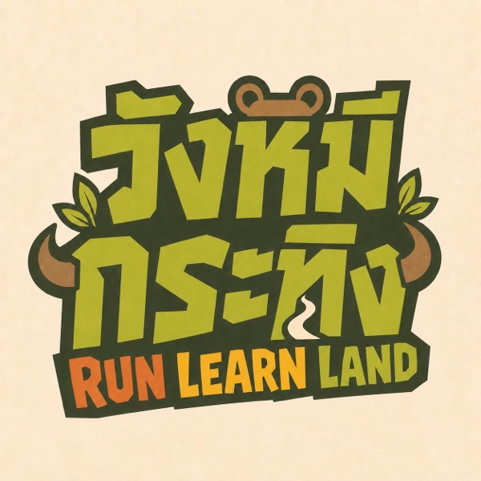
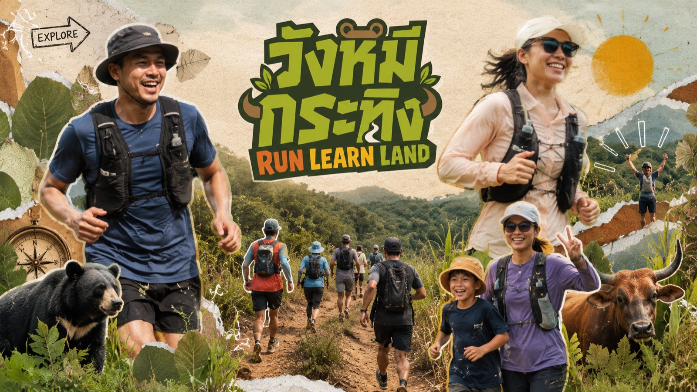

<title>วังหมีกระทิง Run Learn Land — Project Hub</title>
<meta name="viewport" content="width=device-width, initial-scale=1">
<meta name="description" content="ศูนย์รวมข้อมูลโปรเจกต์ วังหมีกระทิง RUN LEARN LAND — งานค้าง ฝ่ายงาน การเงิน และข้อมูลกิจกรรม สำหรับทีมงานทั้ง 12 ฝ่าย">
<link rel="preconnect" href="https://fonts.googleapis.com">
<link rel="preconnect" href="https://fonts.gstatic.com" crossorigin>
<link href="https://fonts.googleapis.com/css2?family=Noto+Sans+Thai:wght@400;500;600;700;800;900&display=swap" rel="stylesheet">
<style>
  :root {
    --avocado: #9BAA36;
    --forest: #202A1C;
    --terracotta: #D46F35;
    --mustard: #E3A72D;
    --cream: #F4E7CF;
    --soil: #654638;
    --paper: #FFFDF8;
    --muted: #66715E;
    --border: rgba(32, 42, 28, 0.14);
    --shadow: 0 20px 50px rgba(32, 42, 28, 0.12);
    --radius-lg: 28px;
    --radius-md: 18px;
    --max: 1180px;
    --done-ink: #5F6E1B;
    --done-soft: rgba(155, 170, 54, 0.16);
    --warn-ink: #8A6410;
    --warn-soft: rgba(227, 167, 45, 0.16);
    --risk-ink: #A84E1D;
    --risk-soft: rgba(212, 111, 53, 0.15);
    --bar-track: rgba(32, 42, 28, 0.08);
  }

  * { box-sizing: border-box; }
  html { scroll-behavior: smooth; }
  @media (prefers-reduced-motion: reduce) {
    html { scroll-behavior: auto; }
    *, *::before, *::after { animation: none !important; transition: none !important; }
  }

  body {
    margin: 0;
    color: var(--forest);
    background:
      radial-gradient(circle at 8% 0%, rgba(227, 167, 45, 0.14), transparent 24rem),
      linear-gradient(180deg, #FFF9ED 0%, var(--paper) 42%, #F5F6EA 100%);
    font-family: "Google Sans", "Noto Sans Thai", system-ui, -apple-system, BlinkMacSystemFont, "Segoe UI", sans-serif;
    line-height: 1.72;
    font-variant-numeric: tabular-nums;
    text-rendering: optimizeLegibility;
    -webkit-font-smoothing: antialiased;
  }

  a { color: inherit; }
  img { max-width: 100%; display: block; }
  a:focus-visible, button:focus-visible, summary:focus-visible {
    outline: 3px solid var(--terracotta);
    outline-offset: 3px;
    border-radius: 6px;
  }

  .container { width: min(calc(100% - 32px), var(--max)); margin-inline: auto; }
  section { padding: 56px 0; scroll-margin-top: 84px; }
  @media (max-width: 1200px) {
    section { scroll-margin-top: 140px; }
  }
  h1, h2, h3 { text-wrap: balance; }

  /* ---------- topbar ---------- */
  .topbar {
    position: sticky;
    top: 0;
    z-index: 50;
    backdrop-filter: blur(16px);
    -webkit-backdrop-filter: blur(16px);
    background: rgba(255, 253, 248, 0.84);
    border-bottom: 1px solid var(--border);
  }
  .nav {
    min-height: 70px;
    padding: 8px 0;
    display: flex;
    align-items: center;
    justify-content: space-between;
    gap: 18px;
    flex-wrap: wrap;
  }
  .brand {
    display: flex;
    align-items: center;
    gap: 12px;
    text-decoration: none;
    font-weight: 900;
    letter-spacing: -0.02em;
  }
  .brand-mark {
    width: 44px;
    height: 44px;
    border-radius: 14px;
    object-fit: cover;
    border: 2px solid var(--forest);
  }
  .brand small { display: block; font-size: 12px; font-weight: 800; color: var(--terracotta); letter-spacing: 0.04em; line-height: 1.2; }
  .brand span b { display: block; font-size: 16px; line-height: 1.25; }
  .nav-links {
    display: flex;
    gap: 4px;
    flex-wrap: wrap;
    font-size: 14px;
    font-weight: 700;
  }
  .nav-links a {
    text-decoration: none;
    opacity: 0.78;
    padding: 10px 12px;
    border-radius: 999px;
    white-space: nowrap;
  }
  .nav-links a:hover { opacity: 1; color: var(--terracotta); }

  /* ---------- hero ---------- */
  .hero { padding: 44px 0 20px; }
  .cover {
    border-radius: var(--radius-lg);
    overflow: hidden;
    box-shadow: var(--shadow);
    border: 1px solid var(--border);
    margin-bottom: 40px;
  }
  .cover img { width: 100%; height: auto; }

  .hero-grid {
    display: grid;
    grid-template-columns: 1.15fr 0.85fr;
    gap: 44px;
    align-items: center;
  }

  .eyebrow {
    display: inline-flex;
    gap: 8px;
    align-items: center;
    padding: 8px 14px;
    border-radius: 999px;
    background: rgba(155, 170, 54, 0.16);
    border: 1px solid rgba(155, 170, 54, 0.34);
    font-size: 13px;
    font-weight: 800;
    text-transform: uppercase;
    letter-spacing: 0.08em;
  }

  h1 {
    font-size: clamp(40px, 6.5vw, 76px);
    line-height: 0.98;
    letter-spacing: -0.05em;
    margin: 22px 0 18px;
    font-weight: 900;
  }
  h1 .h1-accent { display: block; color: var(--terracotta); }

  .hero-sub {
    font-size: clamp(17px, 2vw, 21px);
    color: var(--muted);
    margin: 0 0 22px;
    max-width: 640px;
  }

  .chip-row { display: flex; gap: 8px; flex-wrap: wrap; margin: 0 0 26px; }
  .chip {
    font-size: 13px;
    font-weight: 700;
    padding: 6px 14px;
    border-radius: 999px;
    background: rgba(155, 170, 54, 0.16);
    color: var(--done-ink);
  }
  .chip.amber { background: var(--risk-soft); color: var(--risk-ink); }

  .logo-card {
    background: var(--cream);
    border: 1px solid rgba(32, 42, 28, 0.1);
    border-radius: 34px;
    padding: 18px;
    box-shadow: var(--shadow);
    transform: rotate(1.2deg);
  }
  .logo-card img {
    border-radius: 24px;
    width: 100%;
    aspect-ratio: 1 / 1;
    object-fit: cover;
  }

  .countdown {
    display: grid;
    grid-template-columns: repeat(4, minmax(0, 1fr));
    gap: 10px;
    max-width: 560px;
  }
  .cd-tile {
    padding: 16px 10px;
    text-align: center;
    background: rgba(255, 255, 255, 0.78);
    border: 1px solid var(--border);
    border-radius: var(--radius-md);
  }
  .cd-tile b {
    display: block;
    font-size: clamp(26px, 4vw, 36px);
    font-weight: 900;
    line-height: 1.1;
    color: var(--terracotta);
    letter-spacing: -0.02em;
  }
  .cd-tile small { color: var(--muted); font-size: 13px; font-weight: 700; }

  .hero-cta { margin-top: 26px; display: flex; gap: 12px; flex-wrap: wrap; }
  .btn {
    display: inline-flex;
    align-items: center;
    justify-content: center;
    min-height: 52px;
    padding: 0 26px;
    border-radius: 999px;
    background: var(--forest);
    color: white;
    text-decoration: none;
    font-weight: 900;
    font-size: 15px;
    white-space: nowrap;
    transition: transform 0.15s ease;
  }
  .btn:hover { transform: translateY(-1px); }
  .btn.ghost {
    background: rgba(255, 255, 255, 0.9);
    color: var(--forest);
    border: 1px solid var(--border);
  }

  /* ---------- section head ---------- */
  .section-head {
    display: grid;
    grid-template-columns: 0.75fr 1.25fr;
    gap: 42px;
    align-items: start;
    margin-bottom: 30px;
  }
  .section-head h2 {
    font-size: clamp(30px, 4.5vw, 48px);
    line-height: 1.05;
    letter-spacing: -0.04em;
    margin: 12px 0 0;
    font-weight: 900;
  }
  .section-head p { margin: 0; color: var(--muted); font-size: 17px; }
  h3 { font-size: 19px; font-weight: 800; margin: 0 0 8px; letter-spacing: -0.01em; }

  /* ---------- overview: metrics / pillars / journey ---------- */
  .metrics {
    display: grid;
    grid-template-columns: repeat(3, 1fr);
    gap: 14px;
  }
  .metric {
    border-radius: var(--radius-md);
    border: 1px solid var(--border);
    padding: 20px 22px;
    background: rgba(255, 255, 255, 0.7);
  }
  .metric strong {
    display: block;
    font-size: 28px;
    font-weight: 900;
    line-height: 1.15;
    color: var(--terracotta);
    letter-spacing: -0.02em;
  }
  .metric span { color: var(--muted); font-size: 14px; font-weight: 600; }
  .metric .note { display: block; color: var(--muted); font-size: 13px; opacity: 0.85; margin-top: 2px; }

  .location {
    margin-top: 14px;
    padding: 16px 22px;
    background: var(--cream);
    border: 1px solid rgba(32, 42, 28, 0.1);
    border-radius: var(--radius-md);
    font-size: 15px;
  }
  .location b { color: var(--soil); }

  .pillars {
    display: grid;
    grid-template-columns: repeat(3, 1fr);
    gap: 12px;
    margin-top: 28px;
  }
  .pillar {
    background: var(--forest);
    color: white;
    border-radius: var(--radius-md);
    padding: 20px;
    min-height: 120px;
  }
  .pillar b { display: block; font-size: 22px; font-weight: 900; margin-bottom: 4px; letter-spacing: -0.01em; }
  .pillar span { opacity: 0.76; font-size: 14px; }

  .journey-title { margin: 34px 0 12px; color: var(--muted); font-size: 15px; font-weight: 800; }
  .journey { display: flex; gap: 10px; flex-wrap: wrap; }
  .j-step {
    flex: 1 1 180px;
    padding: 18px 20px;
    border-radius: var(--radius-md);
    background: rgba(255, 255, 255, 0.78);
    border: 1px solid var(--border);
  }
  .j-step .step-no {
    font-size: 12px;
    font-weight: 800;
    letter-spacing: 0.1em;
    text-transform: uppercase;
    color: var(--terracotta);
  }
  .j-step p { margin: 4px 0 0; font-size: 14px; color: var(--muted); }

  /* ---------- generic cards ---------- */
  .cards {
    display: grid;
    grid-template-columns: repeat(3, 1fr);
    gap: 18px;
  }
  .card {
    background: rgba(255, 255, 255, 0.78);
    border: 1px solid var(--border);
    border-radius: var(--radius-md);
    padding: 24px;
  }
  .card p { margin: 0; color: var(--muted); font-size: 15px; }
  .card ul { margin: 12px 0 0; padding-left: 20px; color: var(--muted); font-size: 15px; }
  .card li + li { margin-top: 6px; }

  /* ---------- routes ---------- */
  .route-grid {
    display: grid;
    grid-template-columns: repeat(4, 1fr);
    gap: 14px;
  }
  .route {
    position: relative;
    overflow: hidden;
    border-radius: 24px;
    padding: 24px;
    min-height: 215px;
    background: var(--cream);
    border: 2px solid var(--forest);
  }
  .route:nth-child(2) { background: #E5E9C5; }
  .route:nth-child(3) { background: #F4D8C4; }
  .route:nth-child(4) { background: #F5E4A6; }
  .route small { font-weight: 800; text-transform: uppercase; letter-spacing: 0.06em; font-size: 13px; }
  .route strong { display: block; font-size: 44px; font-weight: 900; line-height: 1; margin: 14px 0; letter-spacing: -0.02em; }
  .route p { margin: 0; color: var(--soil); font-size: 15px; }
  .route-note { margin-top: 16px; color: var(--muted); font-size: 14px; }
  .route-map {
    margin-top: 22px;
    border-radius: var(--radius-md);
    overflow: hidden;
    background: var(--cream);
    box-shadow: 0 18px 40px rgba(0, 0, 0, 0.12);
  }
  .route-map iframe {
    display: block;
    width: 100%;
    height: 480px;
    border: 0;
  }
  .route-map-foot {
    display: flex;
    flex-wrap: wrap;
    align-items: center;
    justify-content: space-between;
    gap: 8px;
    padding: 12px 18px;
    font-size: 14px;
    color: var(--muted);
  }
  .route-map-foot a { color: var(--terracotta); font-weight: 700; }

  /* ---------- tbd chip ---------- */
  .tbd {
    display: inline-block;
    background: #FFF4CC;
    color: #6B5310;
    border: 1px dashed #CBAA43;
    border-radius: 10px;
    padding: 2px 8px;
    font-weight: 800;
    font-size: 0.82em;
    line-height: 1.5;
    vertical-align: middle;
  }

  /* ---------- notice (forest block) ---------- */
  .notice {
    background: var(--forest);
    color: white;
    border-radius: var(--radius-lg);
    padding: 30px;
    box-shadow: var(--shadow);
  }
  .notice h3 { margin: 0 0 8px; font-size: clamp(20px, 3vw, 26px); color: white; }
  .notice p { margin: 0; color: rgba(255, 255, 255, 0.78); font-size: 15px; }
  .notice strong { color: var(--mustard); font-weight: 800; }

  /* ---------- tasks ---------- */
  .task-list { display: flex; flex-direction: column; gap: 12px; }
  .task {
    display: flex;
    align-items: flex-start;
    gap: 14px;
    background: rgba(255, 255, 255, 0.78);
    border: 1px solid var(--border);
    border-radius: var(--radius-md);
    padding: 18px 22px;
  }
  .task .dot { flex: none; width: 10px; height: 10px; border-radius: 50%; margin-top: 9px; }
  .dot.warn { background: var(--mustard); }
  .dot.good { background: var(--avocado); }
  .dot.crit { background: var(--terracotta); }
  .task-body { flex: 1; min-width: 0; }
  .task-body b { font-size: 16px; }
  .task-body p { margin: 2px 0 0; color: var(--muted); font-size: 14px; }
  .task-meta { display: flex; gap: 6px; flex-wrap: wrap; margin-top: 10px; }
  .tag {
    font-size: 12px;
    font-weight: 800;
    padding: 4px 12px;
    border-radius: 999px;
    background: rgba(32, 42, 28, 0.07);
    color: var(--muted);
  }
  .tag.owner { background: var(--done-soft); color: var(--done-ink); }
  .tag.due { background: var(--warn-soft); color: var(--warn-ink); }
  .tag.done { background: var(--done-soft); color: var(--done-ink); }
  .tag.risk { background: var(--risk-soft); color: var(--risk-ink); }

  /* ---------- departments ---------- */
  .dept-grid { display: grid; grid-template-columns: repeat(auto-fit, minmax(min(300px, 100%), 1fr)); gap: 16px; }
  .dept {
    background: rgba(255, 255, 255, 0.78);
    border: 1px solid var(--border);
    border-radius: var(--radius-md);
    padding: 24px;
    display: flex;
    flex-direction: column;
    gap: 10px;
  }
  .dept-head { display: flex; align-items: baseline; gap: 8px; flex-wrap: wrap; }
  .dept-head h3 { flex: 1 1 auto; min-width: 0; margin: 0; }
  .dept-goal { font-size: 14px; color: var(--muted); margin: 0; }
  .dept-goal em { color: var(--terracotta); font-style: normal; font-weight: 800; }
  .people { display: flex; gap: 6px; flex-wrap: wrap; }
  .who {
    font-size: 12px;
    font-weight: 800;
    padding: 4px 12px;
    border-radius: 999px;
    background: var(--risk-soft);
    color: var(--risk-ink);
  }
  .who.member { background: rgba(32, 42, 28, 0.07); color: var(--muted); font-weight: 700; }
  .dept details { margin-top: 2px; }
  .dept summary {
    cursor: pointer;
    font-size: 14px;
    font-weight: 800;
    color: var(--done-ink);
    list-style: none;
    display: flex;
    align-items: center;
    gap: 6px;
    user-select: none;
    padding: 10px 0;
    min-height: 44px;
  }
  .dept summary::-webkit-details-marker { display: none; }
  .dept summary::before { content: "▸"; transition: transform 0.15s ease; font-size: 12px; }
  .dept details[open] summary::before { transform: rotate(90deg); }
  .dept details ul { margin: 4px 0 4px; padding-left: 20px; font-size: 14px; color: var(--muted); }
  .dept details li { margin: 3px 0; }
  .q-block {
    margin-top: 8px;
    padding: 12px 16px;
    border-radius: 12px;
    background: var(--cream);
    font-size: 14px;
    color: var(--soil);
  }
  .q-block b {
    color: var(--risk-ink);
    font-size: 12px;
    letter-spacing: 0.06em;
    text-transform: uppercase;
    display: block;
    margin-bottom: 3px;
  }
  .q-block ul { margin: 0; padding-left: 18px; }

  .price {
    display: inline-block;
    margin-top: 12px;
    padding: 6px 14px;
    border-radius: 999px;
    background: var(--risk-soft);
    color: var(--risk-ink);
    font-weight: 800;
    font-size: 15px;
    font-variant-numeric: tabular-nums;
  }

  /* ---------- finance ---------- */
  .fin-notice { margin-bottom: 18px; }
  .fin-grid { display: grid; grid-template-columns: repeat(auto-fit, minmax(min(400px, 100%), 1fr)); gap: 16px; align-items: start; }
  .bar-row {
    display: grid;
    grid-template-columns: 9.5rem 1fr 5.5rem;
    gap: 10px;
    align-items: center;
    margin: 10px 0;
    font-size: 14px;
  }
  .bar-row .lbl { color: var(--muted); font-weight: 700; text-align: right; }
  .bar-track { background: var(--bar-track); border-radius: 999px; height: 14px; overflow: hidden; }
  .bar-fill { height: 100%; border-radius: 999px; background: var(--avocado); }
  .bar-fill.amber { background: var(--terracotta); }
  .bar-row .val { font-weight: 800; text-align: right; }
  .fin-note { font-size: 13px; color: var(--muted); margin: 14px 0 0; }
  .fin-note strong { color: var(--warn-ink); }

  .table-wrap {
    overflow-x: auto;
    background: white;
    border: 1px solid var(--border);
    border-radius: var(--radius-md);
  }
  table { width: 100%; border-collapse: collapse; font-size: 14px; }
  th, td {
    padding: 12px 16px;
    text-align: left;
    vertical-align: top;
    border-bottom: 1px solid var(--border);
  }
  th {
    background: var(--forest);
    color: white;
    font-size: 13px;
    font-weight: 700;
    letter-spacing: 0.04em;
  }
  tr:last-child td { border-bottom: 0; }
  td.num, th.num { text-align: right; }
  tr.total td { font-weight: 900; color: var(--risk-ink); }
  .td-soft { color: var(--muted); font-size: 13px; }

  /* ---------- pledge ---------- */
  .pledge {
    background: linear-gradient(135deg, rgba(155, 170, 54, 0.95), rgba(32, 42, 28, 0.98));
    color: white;
    border-radius: 34px;
    padding: 42px;
    position: relative;
    overflow: hidden;
  }
  .pledge::after {
    content: "RUN • LEARN • LAND";
    position: absolute;
    right: -30px;
    bottom: -16px;
    font-size: clamp(44px, 8vw, 110px);
    font-weight: 900;
    opacity: 0.07;
    white-space: nowrap;
  }
  .pledge .eyebrow { background: rgba(255, 255, 255, 0.12); border: 0; color: white; }
  .pledge blockquote {
    margin: 18px 0 0;
    font-size: clamp(21px, 3vw, 34px);
    line-height: 1.45;
    font-weight: 800;
    max-width: 900px;
    text-wrap: balance;
  }

  /* ---------- meetings timeline + cta ---------- */
  .timeline { display: flex; flex-direction: column; gap: 0; position: relative; padding-left: 26px; }
  .timeline::before {
    content: "";
    position: absolute;
    left: 7px;
    top: 10px;
    bottom: 10px;
    width: 2px;
    background: var(--bar-track);
    border-radius: 2px;
  }
  .t-item { position: relative; padding: 0 0 28px; }
  .t-item::before {
    content: "";
    position: absolute;
    left: -25px;
    top: 8px;
    width: 12px;
    height: 12px;
    border-radius: 50%;
    background: var(--avocado);
    box-shadow: 0 0 0 4px rgba(155, 170, 54, 0.2);
  }
  .t-item.next::before { background: var(--terracotta); box-shadow: 0 0 0 4px rgba(212, 111, 53, 0.18); }
  .t-date { font-size: 13px; font-weight: 800; color: var(--terracotta); letter-spacing: 0.06em; }
  .t-item h3 { margin: 3px 0 4px; }
  .t-item p { margin: 0; color: var(--muted); font-size: 15px; max-width: 46rem; }

  .cta {
    display: flex;
    justify-content: space-between;
    align-items: center;
    gap: 30px;
    background: var(--terracotta);
    color: white;
    border-radius: var(--radius-lg);
    padding: 34px;
    margin-top: 26px;
  }
  .cta h3 { margin: 0; font-size: clamp(22px, 3vw, 30px); color: white; }
  .cta p { margin: 8px 0 0; font-size: 19px; font-weight: 700; }

  /* ---------- accordion (faq) ---------- */
  .accordion details {
    background: white;
    border: 1px solid var(--border);
    border-radius: 16px;
    padding: 0 20px;
    margin-bottom: 12px;
  }
  .accordion summary {
    cursor: pointer;
    font-weight: 800;
    font-size: 16px;
    padding: 20px 0;
    list-style: none;
    user-select: none;
    display: flex;
    justify-content: space-between;
    align-items: center;
    gap: 12px;
  }
  .accordion summary::-webkit-details-marker { display: none; }
  .accordion summary::after { content: "+"; flex: none; font-size: 22px; line-height: 1; color: var(--terracotta); }
  .accordion details[open] summary::after { content: "−"; }
  .accordion details p, .accordion details ul { color: var(--muted); margin-top: 0; padding-bottom: 18px; font-size: 15px; }

  /* ---------- files ---------- */
  .file-grid { display: grid; grid-template-columns: repeat(auto-fit, minmax(min(250px, 100%), 1fr)); gap: 14px; }
  .file-card {
    background: rgba(255, 255, 255, 0.78);
    border: 1px solid var(--border);
    border-radius: var(--radius-md);
    padding: 20px 22px;
    display: block;
    color: var(--forest);
    text-decoration: none;
    transition: transform 0.15s ease;
  }
  a.file-card:hover { transform: translateY(-2px); }
  .file-card .kind {
    font-size: 12px;
    font-weight: 800;
    letter-spacing: 0.1em;
    text-transform: uppercase;
    color: var(--terracotta);
  }
  .file-card b { display: block; margin: 4px 0 2px; font-size: 16px; }
  .file-card p { margin: 0; font-size: 13px; color: var(--muted); }

  footer { padding: 20px 0 60px; color: var(--muted); font-size: 14px; }
  footer .container { display: flex; gap: 16px; flex-wrap: wrap; justify-content: space-between; }

  /* ---------- responsive ---------- */
  @media (max-width: 900px) {
    .hero-grid, .section-head { grid-template-columns: 1fr; gap: 18px; }
    .section-head p { font-size: 16px; }
    .logo-card { max-width: 380px; }
    .cards { grid-template-columns: 1fr 1fr; }
    .route-grid { grid-template-columns: 1fr 1fr; }
    .metrics { grid-template-columns: 1fr 1fr; }
    .pillars { grid-template-columns: repeat(auto-fit, minmax(180px, 1fr)); }
    .nav { justify-content: flex-start; }
    .nav-links {
      width: 100%;
      flex-wrap: nowrap;
      overflow-x: auto;
      -webkit-overflow-scrolling: touch;
      scrollbar-width: none;
      padding-bottom: 6px;
      gap: 6px;
    }
    .nav-links::-webkit-scrollbar { display: none; }
    .nav-links a {
      background: rgba(32, 42, 28, 0.06);
      padding: 11px 16px;
      opacity: 1;
    }
  }

  @media (max-width: 620px) {
    section { padding: 44px 0; }
    .hero { padding-top: 28px; }
    .cover { margin-bottom: 28px; }
    .cards, .route-grid, .pillars, .metrics { grid-template-columns: 1fr; }
    .route-map iframe { height: 340px; }
    .cta { flex-direction: column; align-items: flex-start; }
    .pledge { padding: 28px; }
    .notice { padding: 24px; }
    .card, .dept { padding: 20px; }
    .bar-row {
      grid-template-columns: 1fr auto;
      grid-template-areas: "lbl val" "bar bar";
      gap: 4px 10px;
      margin: 14px 0;
    }
    .bar-row .lbl { grid-area: lbl; text-align: left; }
    .bar-row .bar-track { grid-area: bar; }
    .bar-row .val { grid-area: val; }
  }

  /* ---------- brand mood & tone ---------- */
  .essence {
    margin-top: 18px; background: var(--forest); color: white;
    border-radius: var(--radius-lg); padding: 36px; box-shadow: var(--shadow);
    position: relative; overflow: hidden;
  }
  .essence::after {
    content: "RUN • LEARN • LAND"; position: absolute; right: -20px; bottom: -14px;
    font-size: clamp(40px, 7vw, 90px); font-weight: 900; opacity: 0.07; white-space: nowrap;
  }
  .essence b { display: block; font-size: clamp(22px, 3.2vw, 34px); line-height: 1.35; font-weight: 800; max-width: 760px; }
  .essence p { color: rgba(255, 255, 255, 0.75); margin: 12px 0 0; max-width: 640px; }
  .swatches { display: grid; grid-template-columns: repeat(auto-fit, minmax(min(160px, 100%), 1fr)); gap: 14px; }
  .swatch { border-radius: var(--radius-md); overflow: hidden; border: 1px solid var(--border); background: white; }
  .swatch .chip { height: 96px; }
  .swatch .meta { padding: 12px 14px; font-size: 13px; }
  .swatch .meta b { display: block; font-size: 14.5px; }
  .swatch .meta code { color: var(--muted); font-family: ui-monospace, Menlo, monospace; font-size: 12.5px; }
  .ratio-bar { display: flex; height: 40px; border-radius: 999px; overflow: hidden; margin-top: 20px; box-shadow: var(--shadow); }
  .ratio-bar div { display: flex; align-items: center; justify-content: center; font-size: 12.5px; font-weight: 800; color: white; }
  .ratio-note { color: var(--muted); font-size: 13.5px; margin-top: 8px; }
  .vs { display: grid; grid-template-columns: repeat(auto-fit, minmax(min(320px, 100%), 1fr)); gap: 14px; }
  .vs-col { border-radius: var(--radius-md); padding: 22px; border: 1px solid var(--border); }
  .vs-col.good { background: rgba(155, 170, 54, 0.14); }
  .vs-col.bad { background: rgba(212, 111, 53, 0.12); }
  .vs-col h3 { margin: 0 0 12px; font-size: 17px; }
  .vs-col ul { margin: 0; padding-left: 0; list-style: none; }
  .vs-col li {
    background: rgba(255, 255, 255, 0.75); border-radius: 12px; padding: 12px 16px;
    margin-bottom: 10px; font-size: 15px; line-height: 1.6;
  }
  .vs-col li:last-child { margin-bottom: 0; }
  .rules { counter-reset: rule; }
  .rules li { margin: 8px 0; font-size: 15.5px; }
  .word-row { display: flex; gap: 8px; flex-wrap: wrap; margin-top: 10px; }
  .word { padding: 6px 14px; border-radius: 999px; font-weight: 700; font-size: 14px; }
  .word.use { background: rgba(155, 170, 54, 0.18); color: #5F6E1B; }
  .word.avoid { background: rgba(212, 111, 53, 0.12); color: #A84E1D; text-decoration: line-through; }
  .specimen { background: white; border: 1px solid var(--border); border-radius: var(--radius-lg); padding: 30px; }
  .specimen .big { font-size: clamp(30px, 5vw, 54px); font-weight: 900; letter-spacing: -0.045em; line-height: 1.05; }
  .specimen .body { max-width: 560px; color: var(--muted); margin-top: 14px; }
  .specimen .label { font-size: 12px; font-weight: 800; letter-spacing: 0.1em; text-transform: uppercase; color: var(--terracotta); margin: 20px 0 6px; }
  .tagline-grid { display: grid; grid-template-columns: repeat(auto-fit, minmax(min(300px, 100%), 1fr)); gap: 14px; }
  .tagline {
    background: var(--cream); border: 2px solid var(--forest); border-radius: 22px;
    padding: 22px; font-weight: 800; font-size: 19px; line-height: 1.5; position: relative;
  }
  .tagline small { display: block; font-weight: 600; font-size: 13px; color: var(--soil); margin-top: 8px; }
  .tagline.star { background: #F5E4A6; }
  .tagline.star::before {
    content: "แนะนำ"; position: absolute; top: -12px; right: 16px;
    background: var(--terracotta); color: white; font-size: 12px; font-weight: 800;
    padding: 3px 12px; border-radius: 999px;
  }
  .check { background: white; border: 1px solid var(--border); border-radius: var(--radius-md); padding: 24px; }
  .check ul { margin: 0; padding-left: 0; list-style: none; }
  .check li { padding: 10px 0 10px 34px; position: relative; font-size: 15.5px; border-bottom: 1px dashed var(--border); }
  .check li:last-child { border-bottom: 0; }
  .check li::before { content: "☐"; position: absolute; left: 4px; color: var(--terracotta); font-size: 18px; }

  @media (max-width: 460px) {
    .countdown { grid-template-columns: repeat(2, minmax(0, 1fr)); }
    .eyebrow { border-radius: 16px; }
  }
</style>

<header class="topbar">
  <div class="container nav">
    <a class="brand" href="#overview">
      
      <span><b>วังหมีกระทิง</b><small>RUN LEARN LAND · Project Hub</small></span>
    </a>
    <nav class="nav-links" aria-label="เมนูหลัก">
      <a href="#overview">ภาพรวม</a>
      <a href="#routes">ระยะกิจกรรม</a>
      <a href="#packages">แพ็กเกจ</a>
      <a href="#addons">บริการเสริม</a>
      <a href="#registration">การสมัคร</a>
      <a href="#rules">กติกา</a>
      <a href="#tasks">งานค้าง</a>
      <a href="#depts">ฝ่ายงาน</a>
      <a href="#finance">การเงิน</a>
      <a href="#impact">Impact</a>
      <a href="#brand">Mood &amp; Tone</a>
      <a href="#meetings">ประชุม</a>
      <a href="#faq">FAQ</a>
      <a href="#files">ไฟล์</a>
    </nav>
  </div>
</header>

<section class="hero">
  <div class="container">
    <div class="cover"></div>

    <div class="hero-grid">
      <div>
        <span class="eyebrow">Wang Mi × Krating · Family Nature Trail Festival</span>
        <h1>วังหมีกระทิง <span class="h1-accent">RUN LEARN LAND</span></h1>
        <p class="hero-sub">26–27 ธันวาคม 2569 · ศูนย์รวมข้อมูลโปรเจกต์สำหรับทีมงานทั้ง 12 ฝ่าย — สรุปจาก Google Slides ประชุมล่าสุด</p>

        <div class="chip-row">
          <span class="chip amber">Run นำ — ระดมทุนจากการวิ่ง</span>
          <span class="chip">เทรล 15 กม.</span>
          <span class="chip">เส้นศึกษาธรรมชาติ 5 กม.</span>
          <span class="chip">Target: Family · นักวิ่งเทรล · Creator สายธรรมชาติ</span>
        </div>
      </div>


    </div>

    <div style="margin-top:34px;">
      <div class="countdown" id="countdown" aria-label="นับถอยหลังถึงวันงาน">
        <div class="cd-tile"><b id="cd-d">—</b><small>วัน</small></div>
        <div class="cd-tile"><b id="cd-h">—</b><small>ชั่วโมง</small></div>
        <div class="cd-tile"><b id="cd-m">—</b><small>นาที</small></div>
        <div class="cd-tile"><b id="cd-s">—</b><small>วินาที</small></div>
      </div>

      <div class="hero-cta">
        <a class="btn" href="https://docs.google.com/presentation/d/1XixIEtHMdWNPv9-A1-TIhnJgSiNk5z4JQ2BJKwCxIR4/edit" target="_blank" rel="noopener">เปิดสไลด์ต้นทาง ↗</a>
        <a class="btn ghost" href="#tasks">ดูงานค้างก่อนประชุมหน้า</a>
      </div>
    </div>
  </div>
</section>

<section id="overview">
  <div class="container">
    <div class="section-head">
      <div>
        <span class="eyebrow">Overview</span>
        <h2>ภาพรวมโปรเจกต์</h2>
      </div>
      <p>งานนี้ไม่ position เป็นงานวิ่งเทรลธรรมดา — ใช้การวิ่งเป็นประตูพาครอบครัวและเด็กกลับมาเชื่อมโยงกับธรรมชาติ และเปลี่ยนการวิ่งหนึ่งครั้งให้เกิดพื้นที่เรียนรู้ธรรมชาติระยะยาว</p>
    </div>

    <div class="metrics">
      <div class="metric"><strong>26–27 ธ.ค. 2569</strong><span>วันจัดงาน · 2 วัน ที่วังหมี กระทิง</span><span class="note">✓ คอนเฟิร์มแล้ว 16 ก.ค. 69</span></div>
      <div class="metric"><strong>2,674,800 บาท</strong><span>เป้ารายรับรวมทั้งงาน</span><span class="note">คำนวณรวมทุกช่องทาง — อัปเดต 15 ก.ค. 69</span></div>
      <div class="metric"><strong>1,101,000 บาท</strong><span>ประมาณการรายจ่าย</span><span class="note">8 หมวดหลัก — ดูรายละเอียดที่แผนการเงิน</span></div>
      <div class="metric"><strong>1,050 คน</strong><span>เป้าผู้เข้าร่วม</span><span class="note">ประมาณจากจำนวนบัตร: นักวิ่ง 700 + ธรรมชาติ 350</span></div>
      <div class="metric"><strong>12 ฝ่าย</strong><span>โครงสร้างทีมงาน</span><span class="note">Pre-event → Event</span></div>
      <div class="metric"><strong>1,000,000 บาท</strong><span>เป้าหมายระดมทุนสุทธิของโครงการ</span></div>
      <div class="metric"><strong>300 ไร่</strong><span>พื้นที่เป้าหมายเพื่อการเรียนรู้ธรรมชาติ</span></div>
      <div class="metric"><strong>5–15 กม.</strong><span>แนวระยะกิจกรรมสำหรับครอบครัวและนักวิ่ง</span></div>
      <div class="metric"><strong>1 Living Playground</strong><span>พื้นที่ที่การเคลื่อนไหวเปลี่ยนเป็นการเรียนรู้</span></div>
    </div>

    <div class="location">
      <b>สถานที่:</b> วิสาหกิจชุมชนนวัตกรรมเกษตรเวลเนสวังหมี อำเภอวังน้ำเขียว จังหวัดนครราชสีมา
    </div>

    <div class="pillars">
      <div class="pillar"><b>🏃 RUN</b><span>MOVE — เดิน วิ่ง สำรวจ และออกจากชีวิตเดิม</span></div>
      <div class="pillar"><b>🔍 LEARN</b><span>DISCOVER — เรียนจากต้นไม้ ดิน แมลง ผู้คน และประสบการณ์</span></div>
      <div class="pillar"><b>🌱 LAND</b><span>BELONG — เชื่อมโยงกับพื้นที่ ธรรมชาติ ชุมชน และวัฒนธรรม</span></div>
    </div>

    <h3 class="journey-title">Journey Experience ของผู้ร่วมงาน — 5 ขั้น</h3>
    <div class="journey">
      <div class="j-step"><div class="step-no">📍 01 · Arrive</div><p>ฉันมาถึงโลกของ Wang Mi</p></div>
      <div class="j-step"><div class="step-no">🔎 02 · Discover</div><p>ฉันค้นพบธรรมชาติและวังหมี</p></div>
      <div class="j-step"><div class="step-no">🎯 03 · Play &amp; Connect</div><p>ฉันทำกิจกรรมกับครอบครัวและผู้คน</p></div>
      <div class="j-step"><div class="step-no">🏆 04 · Achieve</div><p>ฉันพิชิตบางอย่าง</p></div>
      <div class="j-step"><div class="step-no">🌳 05 · Leave a Legacy</div><p>ฉันทิ้งบางอย่างที่ดีไว้ให้อนาคต — Legacy Wall</p></div>
    </div>
  </div>
</section>

<section id="routes">
  <div class="container">
    <div class="section-head">
      <div>
        <span class="eyebrow">Routes</span>
        <h2>ระยะกิจกรรม</h2>
      </div>
      <p>โครงสร้างด้านล่างเป็นเวอร์ชันพร้อมใช้สำหรับวางระบบสมัคร โดยควรยืนยันระยะจริงอีกครั้งหลังสำรวจและทดสอบเส้นทาง</p>
    </div>
    <div class="route-grid">
      <div class="route"><small>👨‍👩‍👧‍👦 Family Discovery</small><strong>3 KM</strong><p>เดิน–วิ่งสำหรับเด็ก ครอบครัว และผู้เริ่มต้น เน้นภารกิจเรียนรู้ระหว่างทาง</p></div>
      <div class="route"><small>🌿 Nature Trail</small><strong>5 KM</strong><p>เส้นทางธรรมชาติระยะสั้น เหมาะกับผู้เริ่มวิ่งเทรลและครอบครัวที่พร้อมผจญภัย</p></div>
      <div class="route"><small>⛰️ Adventure Trail</small><strong>10 KM</strong><p>เส้นทางที่เพิ่มความท้าทายและการสำรวจภูมิประเทศอย่างจริงจังขึ้น</p></div>
      <div class="route"><small>🗺️ Explorer Trail</small><strong>15 KM</strong><p>ระยะยาวสุดของงาน สำหรับผู้มีประสบการณ์และเตรียมร่างกายมาอย่างเหมาะสม</p></div>
    </div>
    <p class="route-note"><span class="tbd">รอยืนยัน</span> ระยะจริงทั้งหมดจะยืนยันอีกครั้งหลังทีมลงพื้นที่สำรวจเส้นทาง (ดูงานค้าง "ลงพื้นที่สำรวจเส้นทางครั้งแรก")</p>
    <div class="route-map">
      <iframe src="https://www.google.com/maps/d/embed?mid=1j2IiKQuSGUG_nckotmb4z9ny_POFldY&amp;ehbc=2E312F" title="แผนที่เส้นทางวิ่ง วังหมีกระทิง Run Learn Land" loading="lazy" allowfullscreen></iframe>
      <div class="route-map-foot">
        <span>🗺️ แผนที่เส้นทางกิจกรรม (Google My Maps) — เลเยอร์เส้นทางอาจปรับเปลี่ยนหลังลงพื้นที่สำรวจ</span>
        <a href="https://www.google.com/maps/d/viewer?mid=1j2IiKQuSGUG_nckotmb4z9ny_POFldY" target="_blank" rel="noopener">เปิดแผนที่เต็มจอ ↗</a>
      </div>
    </div>
  </div>
</section>

<section id="packages">
  <div class="container">
    <div class="section-head">
      <div>
        <span class="eyebrow">Packages</span>
        <h2>แพ็กเกจและสิ่งที่ได้รับ</h2>
      </div>
      <p>รายการจริงควรล็อกพร้อมงบประมาณและกำหนดวันผลิตก่อนประกาศขาย</p>
    </div>
    <div class="cards">
      <article class="card">
        <h3>🎽 Race Essentials</h3>
        <ul>
          <li>Bib หรือหมายเลขผู้เข้าร่วม</li>
          <li>ระบบบันทึกเวลา/Tracking ตามระยะ</li>
          <li>ประกันอุบัติเหตุ</li>
          <li>จุดน้ำและปฐมพยาบาล</li>
        </ul>
      </article>
      <article class="card">
        <h3>🎁 Event Kit</h3>
        <ul>
          <li>เสื้อที่ระลึก</li>
          <li>เหรียญผู้พิชิต</li>
          <li>Digital Certificate</li>
          <li>ของที่ระลึก <span class="tbd">รอยืนยัน</span></li>
        </ul>
      </article>
      <article class="card">
        <h3>📖 Learning Experience</h3>
        <ul>
          <li>Nature Passport</li>
          <li>Learning Checkpoint</li>
          <li>Family Mission</li>
          <li>Community Experience</li>
        </ul>
      </article>
    </div>
  </div>
</section>

<section id="addons">
  <div class="container">
    <div class="section-head">
      <div>
        <span class="eyebrow">Add-on Services</span>
        <h2>บริการเสริม</h2>
      </div>
      <p>จองบริการเสริมเพื่อประสบการณ์ที่สมบูรณ์แบบ 2 วัน 1 คืนในวังหมี</p>
    </div>
    <div class="cards">
      <article class="card">
        <h3>🏕️ VIP Glamping Tent</h3>
        <p>เต็นท์พร้อมเครื่องนอนครบชุดสำหรับครอบครัว หรือเช่าพื้นที่กางเต็นท์สำหรับผู้นำอุปกรณ์มาเอง</p>
        <div class="price">590 – 2,500 บาท</div>
      </article>
      <article class="card">
        <h3>🍽️ Farm-to-Table Exclusive Dinner</h3>
        <p>อาหารเย็นวัตถุดิบอินทรีย์จากวังหมี เมนูพิเศษจากเชฟท้องถิ่น พร้อมบรรยากาศธรรมชาติ</p>
        <div class="price">390 บาท/ท่าน</div>
      </article>
      <article class="card">
        <h3>🔥 Family Survival Class</h3>
        <p>คลาสสอนทักษะเอาตัวรอดสำหรับครอบครัว — ตั้งแต่การจุดไฟ การหาน้ำ การปฐมพยาบาลเบื้องต้น</p>
        <div class="price">290 บาท/ครอบครัว</div>
      </article>
      <article class="card">
        <h3>🌙 Night Safari &amp; Stargazing</h3>
        <p>พาเด็กๆ เดินส่องแมลงกลางคืนและดูดาว พร้อมนักธรรมชาติวิทยามืออาชีพ</p>
        <div class="price">190 บาท/คน</div>
      </article>
      <article class="card">
        <h3>🛍️ Eco-Merchandise</h3>
        <p>แก้วน้ำสแตนเลส Mug, หมวกซาฟารีสำหรับเด็ก, เสื้อฮู้ดดี้กันหนาว</p>
        <div class="price">150 – 890 บาท</div>
      </article>
      <article class="card">
        <h3>☕ Agro-Cafe &amp; ตลาดนัดชุมชน</h3>
        <p>กาแฟสด เบเกอรี่ และสินค้าชุมชนวังหมี ตลาดนัดเปิดตลอดวัน</p>
        <div class="price">จำหน่ายหนางาน</div>
      </article>
    </div>
  </div>
</section>

<section id="registration">
  <div class="container">
    <div class="section-head">
      <div>
        <span class="eyebrow">Registration</span>
        <h2>ขั้นตอนการสมัคร</h2>
      </div>
      <p>Flow ที่ออกแบบให้สอดคล้องกับระบบรับสมัครงานวิ่งมาตรฐานและลดปัญหาข้อมูลไม่ครบหรือชำระเงินไม่สมบูรณ์</p>
    </div>
    <div class="cards">
      <article class="card"><h3>🎯 01 เลือกกิจกรรม</h3><p>เลือกระยะ ประเภทผู้สมัคร แพ็กเกจเสื้อ และบริการจัดส่งหรือรับด้วยตนเอง</p></article>
      <article class="card"><h3>✏️ 02 กรอกข้อมูล</h3><p>กรอกข้อมูลส่วนบุคคล วันเกิด ติดต่อฉุกเฉิน ข้อมูลสุขภาพ และข้อมูลที่ใช้ทำประกัน</p></article>
      <article class="card"><h3>✅ 03 ตรวจสอบ</h3><p>ตรวจชื่อ ระยะ ขนาดเสื้อ ยอดชำระ และอ่านเงื่อนไขทั้งหมดก่อนยืนยัน</p></article>
      <article class="card"><h3>💳 04 ชำระเงิน</h3><p>เลือกช่องทางชำระเงินและเก็บหลักฐานไว้จนกว่าสถานะจะยืนยันสำเร็จ</p></article>
      <article class="card"><h3>📧 05 รับการยืนยัน</h3><p>ระบบส่งเลขสมัครและรายละเอียดการรับอุปกรณ์ผ่านอีเมลหรือช่องทางที่กำหนด</p></article>
      <article class="card"><h3>🎒 06 เตรียมตัว</h3><p>ติดตาม Race Guide อุปกรณ์บังคับ สภาพอากาศ แผนที่ และเวลา Check-in ก่อนวันงาน</p></article>
    </div>
  </div>
</section>

<section id="rules">
  <div class="container">
    <div class="section-head">
      <div>
        <span class="eyebrow">Rules &amp; Terms</span>
        <h2>ข้อกำหนดและเงื่อนไข</h2>
      </div>
      <p>ผู้สมัครควรอ่านทุกหัวข้อก่อนกดยอมรับ เนื้อหานี้พร้อมนำไปใช้บนหน้าเว็บรับสมัครหลังตรวจสอบโดยฝ่ายกฎหมายและผู้จัดงาน</p>
    </div>

    <div class="accordion">
      <details open><summary>1. คุณสมบัติผู้สมัคร</summary><ul><li>ผู้สมัครต้องมีสุขภาพแข็งแรงและสามารถเข้าร่วมกิจกรรมกลางแจ้งได้</li><li>ผู้สมัครอายุต่ำกว่า 18 ปีต้องได้รับความยินยอมจากผู้ปกครอง</li><li>เด็กอายุต่ำกว่า 12 ปีต้องมีผู้ปกครองร่วมกิจกรรมตลอดระยะเวลา</li><li>ผู้จัดมีสิทธิ์ปฏิเสธการสมัครหากข้อมูลไม่ถูกต้องหรือไม่เป็นไปตามเงื่อนไข</li></ul></details>
      <details><summary>2. ข้อมูลการสมัคร</summary><p>ผู้สมัครต้องกรอกชื่อ–นามสกุล วันเดือนปีเกิด เลขบัตรประชาชนหรือหนังสือเดินทาง เบอร์โทร อีเมล ผู้ติดต่อฉุกเฉิน และข้อมูลทางการแพทย์ที่จำเป็นให้ครบถ้วนและเป็นความจริง</p></details>
      <details><summary>3. การชำระเงิน</summary><ul><li>การสมัครสมบูรณ์เมื่อชำระเงินและระบบยืนยันแล้ว</li><li>หากไม่ชำระภายในเวลาที่กำหนด ระบบอาจยกเลิกสิทธิ์โดยอัตโนมัติ</li><li>ผู้สมัครควรเก็บหลักฐานการชำระเงินไว้จนกว่าจะได้รับการยืนยัน</li></ul></details>
      <details><summary>4. การเปลี่ยนข้อมูลและโอนสิทธิ์</summary><p>การเปลี่ยนชื่อ ระยะ ขนาดเสื้อ หรือโอนสิทธิ์ ทำได้เฉพาะผ่านช่องทางและภายในวันที่ผู้จัดประกาศ ไม่อนุญาตให้เปลี่ยนตัวผู้เข้าร่วมในวันงานโดยไม่ผ่านระบบ</p></details>
      <details><summary>5. การยกเลิกและคืนเงิน</summary><p>เมื่อชำระเงินแล้วไม่สามารถขอคืนเงินได้ เว้นแต่ผู้จัดประกาศเงื่อนไขเป็นกรณีพิเศษ หากเกิดภัยธรรมชาติ โรคระบาด คำสั่งราชการ หรือเหตุสุดวิสัย ผู้จัดอาจเลื่อน ปรับรูปแบบ หรือยกเลิกกิจกรรมตามความเหมาะสม</p></details>
      <details><summary>6. กติการะหว่างกิจกรรม</summary><ul><li>ใช้เส้นทางที่กำหนดและผ่าน Checkpoint ครบทุกจุด</li><li>แสดง Bib ตลอดกิจกรรม</li><li>ห้ามลัดเส้นทาง ใช้พาหนะ หรือรับความช่วยเหลือที่ทำให้เกิดความได้เปรียบ</li><li>ปฏิบัติตามคำสั่งเจ้าหน้าที่และเคารพผู้ร่วมกิจกรรม</li><li>คำตัดสินของคณะกรรมการถือเป็นที่สิ้นสุด</li></ul></details>
      <details><summary>7. การรับอุปกรณ์</summary><p>ผู้สมัครต้องแสดงหลักฐานยืนยันตัวตนและเลขสมัครเมื่อรับอุปกรณ์ หากให้บุคคลอื่นรับแทน ต้องมีเอกสารมอบอำนาจหรือหลักฐานตามที่ผู้จัดกำหนด</p></details>
      <details><summary>8. การใช้ภาพและสื่อ</summary><p>ผู้สมัครยินยอมให้ผู้จัดบันทึกและใช้ภาพนิ่ง วิดีโอ เสียง และภาพจากอากาศ เพื่อประชาสัมพันธ์ รายงานผล และสื่อสารโครงการโดยไม่เรียกร้องค่าตอบแทน ทั้งนี้อยู่ภายใต้กฎหมายที่เกี่ยวข้อง</p></details>
      <details><summary>9. การคุ้มครองข้อมูลส่วนบุคคล (PDPA)</summary><p>ข้อมูลจะใช้เพื่อการสมัคร ประกันภัย การติดต่อ การจัดกิจกรรม สถิติ และรายงานผล ผู้จัดจะเก็บ ใช้ และเปิดเผยเท่าที่จำเป็นตามวัตถุประสงค์และกฎหมาย รวมถึงให้เจ้าของข้อมูลใช้สิทธิตามที่กฎหมายกำหนด</p></details>
      <details><summary>10. คำรับรองของผู้สมัคร</summary><p>ผู้สมัครรับรองว่าข้อมูลทั้งหมดเป็นความจริง มีสุขภาพเหมาะสม ยอมรับความเสี่ยงของกิจกรรมกลางแจ้ง และจะปฏิบัติตามกฎ คำแนะนำด้านความปลอดภัย และแนวทางดูแลธรรมชาติของผู้จัด</p></details>
    </div>
  </div>
</section>

<section id="tasks">
  <div class="container">
    <div class="section-head">
      <div>
        <span class="eyebrow">Action Items</span>
        <h2>งานค้าง — ต้องเสร็จก่อนประชุมรอบหน้า</h2>
      </div>
      <p>จาก meeting note 05 &amp; 11 ก.ค.: รอบหน้าทุกฝ่าย present พร้อมงบ ระบุว่าเป็น ยืม / ขอสปอนเซอร์ / ซื้อ (คน-งาน-เงิน)</p>
    </div>

    <div class="task-list">
      <div class="task"><span class="dot warn"></span>
        <div class="task-body">
          <b>ทุกฝ่าย: เตรียมงบประมาณ present รอบหน้า</b>
          <p>ใช้ template คน-งาน-เงิน ระบุที่มาของทรัพยากร: ยืม / สปอนเซอร์ / ซื้อ</p>
          <div class="task-meta"><span class="tag owner">ทุกฝ่าย</span><span class="tag due">ประชุมรอบหน้า</span></div>
        </div>
      </div>
      <div class="task"><span class="dot warn"></span>
        <div class="task-body">
          <b>Tagline ของงาน</b>
          <p>คิดและนำเสนอในการประชุมครั้งต่อไป — ต่อยอดจาก positioning "Family Nature Trail Festival"</p>
          <div class="task-meta"><span class="tag owner">ทีมพี่กิ๊ก</span><span class="tag due">ประชุมรอบหน้า</span></div>
        </div>
      </div>
      <div class="task"><span class="dot warn"></span>
        <div class="task-body">
          <b>มาสคอตของงาน</b>
          <p>วาดขึ้นเองโดยทีม — เวลาขายต้องเป็น "หมี-กระทิง"</p>
          <div class="task-meta"><span class="tag owner">อิง</span></div>
        </div>
      </div>
      <div class="task"><span class="dot crit"></span>
        <div class="task-body">
          <b>เคาะเรื่องบัญชีเงินของ event</b>
          <p>event ระดมทุนต้องไม่ใช้บัญชีส่วนบุคคล · ถ้าจะระดมทุนมีกฎหมายระดมทุนเกี่ยวข้อง · ต้องรู้ว่าตอนรับสมัครใช้บัญชีไหน ออกบิลยังไง</p>
          <div class="task-meta"><span class="tag owner">แกนกลาง</span><span class="tag risk">บล็อกการเปิดรับสมัคร</span></div>
        </div>
      </div>
      <div class="task"><span class="dot warn"></span>
        <div class="task-body">
          <b>ลงพื้นที่สำรวจเส้นทางครั้งแรก</b>
          <p>2 วัน 1 คืน (นอนเต็นท์) — ปักจุดเด่นธรรมชาติ จุดเสี่ยง จุดถ่ายรูป ก่อนฝ่าย event จะออกแบบต่อได้ · งบ 5,000 บาท (พี่ต้าให้ยืมเงินสำรวจ)</p>
          <div class="task-meta"><span class="tag owner">จอย ทัช มี่ หนุ่ย พร นัน อิง</span><span class="tag risk">งานอื่นรอฝ่ายนี้</span></div>
        </div>
      </div>
      <div class="task"><span class="dot warn"></span>
        <div class="task-body">
          <b>ปลูกมันม่วง</b>
          <p>ใช้เวลา 4 เดือนเก็บผลผลิต — ต้องปลูกภายใน ~ส.ค. ถึงจะทันจำหน่าย+แปรรูปในงาน ธ.ค.</p>
          <div class="task-meta"><span class="tag owner">รอมอบหมาย</span><span class="tag due">ภายใน ส.ค. 69</span></div>
        </div>
      </div>
      <div class="task"><span class="dot warn"></span>
        <div class="task-body">
          <b>ปรับพื้นที่รองรับงาน</b>
          <p>ลานจอดรถ · ลานกางเต็นท์ · ปรับปรุงห้องน้ำ บ้านไม้ โรงเก็บของ · ย้ายคอกวัว-คอกแพะ รองรับกิจกรรมให้อาหาร/นม</p>
          <div class="task-meta"><span class="tag owner">รอมอบหมาย</span></div>
        </div>
      </div>
      <div class="task"><span class="dot good"></span>
        <div class="task-body">
          <b>เชิญผู้ใหญ่ / ผู้ว่าราชการจังหวัด</b>
          <p>อาจารย์รู้จักผู้ว่า — ประสานผ่านอาจารย์</p>
          <div class="task-meta"><span class="tag owner">อาจารย์</span><span class="tag done">มีช่องทางแล้ว</span></div>
        </div>
      </div>
    </div>
  </div>
</section>

<section id="depts">
  <div class="container">
    <div class="section-head">
      <div>
        <span class="eyebrow">Teams</span>
        <h2>ฝ่ายงานทั้ง 12 ฝ่าย</h2>
      </div>
      <p>กดที่ "การบ้าน" ในแต่ละการ์ดเพื่อดูรายละเอียดงานและคำถามที่ฝ่ายต้องตอบให้ได้</p>
    </div>

    <div class="dept-grid">

      <div class="dept">
        <div class="dept-head"><h3>🗺️ ออกแบบเส้นทางธรรมชาติ</h3></div>
        <div class="people"><span class="who">Head: มี่</span><span class="who member">นัน</span><span class="who member">อิง</span><span class="who member">พร</span><span class="who member">หนุ่ย</span><span class="who member">ปรอ</span></div>
        <p class="dept-goal">เส้นทางที่ <em>สนุก ปลอดภัย มีเรื่องราว และได้เรียนรู้ธรรมชาติ</em></p>
        <details>
          <summary>การบ้าน</summary>
          <ul>
            <li>Mapping จุดเด่น: จุดวิว / จุดเรียนรู้ / จุดพัก / จุดถ่ายรูป / จุดเสี่ยง</li>
            <li>กิจกรรมระหว่างทาง: Nature checkpoint · ภารกิจ · Sound installation · Storytelling station</li>
            <li>ธีมแต่ละช่วงเส้นทาง + วิเคราะห์ระดับความยาก</li>
            <li>เวลาที่เหมาะสม: วิ่งเช้า / กลางคืน / Sunrise / Sunset</li>
            <li>สำรวจจริง: เทรล 15 กม. + ศึกษาธรรมชาติ 5 กม. · จุดน้ำ-พยาบาล-checkpoint รวมจุดเดียวกัน ทุก 3-4 กม.</li>
            <li>บทบาท: Pacer คุมเวลา / Stopper ปิดท้าย / Runner</li>
          </ul>
        </details>
        <div class="q-block"><b>ต้องตอบให้ได้</b><ul><li>ทำไมเส้นทางนี้ต่างจากงาน Trail อื่น</li><li>จุด WOW คืออะไร</li><li>นักวิ่งจะ "รู้สึกอะไร" หลังจบงาน</li></ul></div>
      </div>

      <div class="dept">
        <div class="dept-head"><h3>🎉 กิจกรรมและ Event</h3></div>
        <div class="people"><span class="who">Head: มน</span><span class="who member">กิ๊ก</span><span class="who member">หญิง</span><span class="who member">ไลล่า</span><span class="who member">เบนซ์</span></div>
        <p class="dept-goal">สร้าง <em>Festival Experience</em> ไม่ใช่แค่งานแข่งขัน</p>
        <details>
          <summary>การบ้าน</summary>
          <ul>
            <li>Theme งาน + Timeline กิจกรรม 2-3 วัน + Concept เส้นทาง</li>
            <li>ระยะวิ่งเบื้องต้น: Fun Run / 10K / 25K / Ultra</li>
            <li>กิจกรรมเสริม: ดนตรีสด · Acoustic campfire · Workshop ธรรมชาติ · Stargazing · Yoga · Local food market · Outdoor cinema</li>
            <li>Opening / Closing Experience · โซนครอบครัวและเด็ก</li>
            <li>ระบบสะสม badge / mission / passport</li>
            <li>ประสบการณ์กลางคืน: Night walk / Glow trail / Silent disco</li>
            <li>รอทีมเส้นทางปักจุดก่อน แล้วค่อยออกแบบ event บนเส้นทาง</li>
          </ul>
        </details>
        <div class="q-block"><b>ต้องตอบให้ได้</b><ul><li>ถ้าคนไม่วิ่ง จะยังอยากมางานไหม</li><li>อะไรคือ "Moment ที่คนจะจำ"</li></ul></div>
      </div>

      <div class="dept">
        <div class="dept-head"><h3>📣 การตลาดและการสื่อสาร</h3></div>
        <div class="people"><span class="who">Head: กวาง</span><span class="who member">กิ๊ก</span><span class="who member">อิง</span></div>
        <p class="dept-goal">ทำให้งาน <em>มีตัวตนชัด</em> และคนอยากพูดถึง</p>
        <details>
          <summary>การบ้าน + แนวทางที่วางแล้ว</summary>
          <ul>
            <li>Positioning: <b>Family Nature Trail Festival</b> — ไม่แข่งด้วยระยะ/เหรียญ</li>
            <li>สูตร Content: 40% Story · 30% Experience · 20% Community · 10% Direct Sales</li>
            <li>Visual: เด็ก ครอบครัว เท้าบนดิน มือสัมผัสต้นไม้ แสงเช้า หมอก — ไม่ทำภาพวิ่ง Hardcore</li>
            <li>น้ำเสียง: คนชวนกันออกไปค้นพบธรรมชาติ ไม่ใช่ organizer ประกาศแข่ง</li>
            <li>แผน content 3 เดือนก่อนงาน · FB / IG / TikTok / running &amp; outdoor community</li>
            <li>Community ก่อนงาน: Training run · Online challenge</li>
            <li>Circular Infrastructure: วัสดุ Gate (ไม้ ผ้า เชือก) ไปสร้างศูนย์เรียนรู้หลังงาน</li>
            <li>Legacy Wall + แผนที่วังหมี 3×5 ม. (เด็กติด sticker "ฉันอยากเห็นอะไรเกิดขึ้นที่นี่")</li>
          </ul>
        </details>
        <div class="q-block"><b>ต้องตอบให้ได้</b><ul><li>ทำไมคนต้องเลือกงานนี้</li><li>คนจะถ่ายอะไร แชร์อะไร</li></ul></div>
      </div>

      <div class="dept">
        <div class="dept-head"><h3>💰 ระดมทุนและสปอนเซอร์</h3></div>
        <div class="people"><span class="who">Head: ปรอ</span><span class="who member">กอล์ฟ</span><span class="who member">เหลียน</span></div>
        <p class="dept-goal">หาพาร์ตเนอร์ที่ <em>เข้ากับจิตวิญญาณงาน</em> — เป้า 1,000,000 บาท</p>
        <details>
          <summary>การบ้าน</summary>
          <ul>
            <li>ประเภท sponsor: Outdoor · Energy drink · รถยนต์ · Camping · Sustainability · Health &amp; wellness</li>
            <li>Package: Title / Main / Activity sponsor + สิทธิประโยชน์</li>
            <li>Activation ที่ sponsor ทำได้ในงาน + วิเคราะห์มูลค่าที่ได้รับ</li>
            <li>รายชื่อ sponsor เป้าหมาย + pitch idea เบื้องต้น</li>
          </ul>
        </details>
        <div class="q-block"><b>ต้องตอบให้ได้</b><ul><li>งานสร้างคุณค่าอะไรให้ sponsor</li><li>Sponsor จะ "ดูดี" ยังไงเมื่ออยู่ในงานนี้</li></ul></div>
      </div>

      <div class="dept">
        <div class="dept-head"><h3>🤝 ชุมชนและผู้มีส่วนได้ส่วนเสีย</h3></div>
        <div class="people"><span class="who">Head: พี่ปุ๋ย</span><span class="who">Head: ทัช</span></div>
        <p class="dept-goal">ให้งาน <em>เติบโตไปกับพื้นที่</em></p>
        <details>
          <summary>การบ้าน</summary>
          <ul>
            <li>ระบุ stakeholder: ชุมชน · หน่วยงานรัฐ · อุทยาน · ผู้ประกอบการ · เจ้าของพื้นที่</li>
            <li>วิธีสร้างประโยชน์ให้ชุมชน + การมีส่วนร่วมของคนท้องถิ่น</li>
            <li>Local experience + ร้านค้า/อาหารท้องถิ่น</li>
            <li>วิเคราะห์ผลกระทบ + แผนสื่อสารกับชุมชน</li>
          </ul>
        </details>
        <div class="q-block"><b>ต้องตอบให้ได้</b><ul><li>ชุมชนได้อะไรจากงานนี้</li><li>ทำยังไงให้งานถูกยอมรับระยะยาว</li></ul></div>
      </div>

      <div class="dept">
        <div class="dept-head"><h3>🚚 ปฏิบัติการและโลจิสติกส์</h3></div>
        <div class="people"><span class="who">Head: พี่ปุ๋ย</span><span class="who">Head: หนุ่ย</span><span class="who member">สม</span><span class="who member">ที</span></div>
        <p class="dept-goal">ทำให้งาน <em>ไหลลื่น</em> และจัดการได้จริง</p>
        <details>
          <summary>การบ้าน</summary>
          <ul>
            <li>Flow งานทั้งหมด + layout พื้นที่</li>
            <li>การเดินทาง · parking / shuttle · น้ำ / ไฟ / ห้องน้ำ</li>
            <li>Registration · bag drop · จุดปล่อยตัว / finish</li>
            <li>แผนจัดการคนจำนวนมาก + วิเคราะห์ bottleneck</li>
            <li>ปรับพื้นที่: ลานจอด ลานเต็นท์ ห้องน้ำ บ้านไม้ โรงเก็บของ ย้ายคอกวัว-แพะ</li>
          </ul>
        </details>
        <div class="q-block"><b>ต้องตอบให้ได้</b><ul><li>จุดไหนเสี่ยง chaos</li><li>ถ้าฝนตกจะทำอย่างไร</li></ul></div>
      </div>

      <div class="dept">
        <div class="dept-head"><h3>🚑 ความปลอดภัยและการแพทย์</h3></div>
        <div class="people"><span class="who">Head: เก่ง</span></div>
        <p class="dept-goal">ลดความเสี่ยงสูงสุด <em>พร้อมทุกสถานการณ์</em></p>
        <details>
          <summary>การบ้าน</summary>
          <ul>
            <li>วิเคราะห์ความเสี่ยง + จุดอันตรายบนเส้นทาง</li>
            <li>แผน emergency · ระบบสื่อสาร · medical station · evacuation</li>
            <li>แผนรับมืออากาศ + สัตว์ป่า</li>
            <li>ระบบ tracking นักวิ่ง + ประเมินจำนวนทีมแพทย์/กู้ภัย</li>
          </ul>
        </details>
        <div class="q-block"><b>ต้องตอบให้ได้</b><ul><li>Worst case scenario คืออะไร</li><li>ใช้เวลากู้ภัยนานแค่ไหน</li></ul></div>
      </div>

      <div class="dept">
        <div class="dept-head"><h3>🌱 สิ่งแวดล้อมและความยั่งยืน + คาร์บอนเครดิต</h3></div>
        <div class="people"><span class="who">Head: มิกซ์</span><span class="who member">เหลียน</span><span class="who member">ล่า</span></div>
        <p class="dept-goal">ต้นแบบ <em>Green Trail Event</em> — เป้า carbon = 0</p>
        <details>
          <summary>การบ้าน + Green coach guideline</summary>
          <ul>
            <li>Zero Waste: คัดแยกขยะ · ลด single-use plastic · ระบบ refill · วัสดุย่อยสลายได้</li>
            <li>คำนวณ CFP ของ event: ก่อน / ระหว่าง / หลังงาน — เลือกของมี carbon tag</li>
            <li>จุดมัดจำ-คืนขยะ + policy ค่ามัดจำขยะพลาสติก</li>
            <li>วัตถุดิบอาหาร 80% จากท้องถิ่น · ตัวเลือกอิสลาม/มังสวิรัติ</li>
            <li>บริจาค 10% ให้องค์กรความยั่งยืนของชุมชน</li>
            <li>Carbon offset / credit + ฟื้นฟูธรรมชาติหลังงาน + sustainability KPI</li>
            <li>ฐานเรียนรู้แยกขยะ · อนุรักษ์ความหลากหลายทางชีวภาพ · วัฒนธรรมท้องถิ่นเป็นกรอบ event</li>
          </ul>
        </details>
        <div class="q-block"><b>ต้องตอบให้ได้</b><ul><li>งานจะไม่ทำร้ายธรรมชาติอย่างไร</li><li>วัดผลความยั่งยืนยังไง · Carbon emission เท่าไร</li></ul></div>
      </div>

      <div class="dept">
        <div class="dept-head"><h3>💵 การเงินและบัญชี</h3></div>
        <div class="people"><span class="who">Head: นีย์</span><span class="who member">พร</span></div>
        <p class="dept-goal">ควบคุมต้นทุน <em>ยั่งยืนทางการเงิน</em></p>
        <details>
          <summary>การบ้าน + ประเด็นเปิด</summary>
          <ul>
            <li>ประมาณการรายรับ-รายจ่าย · แยก fixed / variable cost · จุดคุ้มทุน</li>
            <li>Pricing strategy · จำนวนผู้เข้าร่วมที่เหมาะสม · cash flow timeline</li>
            <li>ความเสี่ยงทางการเงิน + contingency budget</li>
            <li>⚠ ใครดูแลเงิน — ต้องถามแกนกลาง · ห้ามใช้บัญชีส่วนบุคคล</li>
            <li>⚠ ถ้าระดมทุน → มีกฎหมายระดมทุนเกี่ยวข้อง · ต้องเคาะบัญชีรับสมัคร + วิธีออกบิล</li>
          </ul>
        </details>
        <div class="q-block"><b>ต้องตอบให้ได้</b><ul><li>งานต้องมีคนขั้นต่ำเท่าไร</li><li>จุดที่งบบานปลายคืออะไร</li></ul></div>
      </div>

      <div class="dept">
        <div class="dept-head"><h3>⚖️ กฎหมายและเอกสาร</h3></div>
        <div class="people"><span class="who">Head: ขวัญ</span><span class="who">Head: เต้ย</span></div>
        <p class="dept-goal">ถูกต้องตามกฎหมาย <em>ลดความเสี่ยง</em></p>
        <details>
          <summary>การบ้าน</summary>
          <ul>
            <li>ใบอนุญาต + เอกสารหน่วยงานรัฐ + ข้อกำหนดพื้นที่ธรรมชาติ</li>
            <li>ประกันภัย · Waiver นักวิ่ง · สัญญาสปอนเซอร์ / ผู้รับจ้าง</li>
            <li>PDPA / การใช้ภาพ · ข้อจำกัดด้านเสียง-เวลา</li>
            <li>เชิญผู้ใหญ่: อาจารย์รู้จักผู้ว่า</li>
          </ul>
        </details>
        <div class="q-block"><b>ต้องตอบให้ได้</b><ul><li>เรื่องไหนเสี่ยงผิดกฎหมายที่สุด</li><li>ต้องขออนุญาตล่วงหน้านานเท่าไร</li></ul></div>
      </div>

      <div class="dept">
        <div class="dept-head"><h3>🙋 อาสาสมัครและบุคลากร</h3></div>
        <div class="people"><span class="who">Head: ช็อคชิพ</span><span class="who">Head: ล่า</span></div>
        <p class="dept-goal">ทีมงานที่ <em>มีพลังและเข้าใจงาน</em></p>
        <details>
          <summary>การบ้าน</summary>
          <ul>
            <li>ประเมินจำนวนคน + แบ่ง role หน้าที่ (Natural Route ใช้ 3 คน)</li>
            <li>ระบบ training · briefing · สื่อสารภายใน</li>
            <li>สิทธิประโยชน์ volunteer + ระบบดูแลทีม + แผนจัดกะ + motivation</li>
          </ul>
        </details>
        <div class="q-block"><b>ต้องตอบให้ได้</b><ul><li>ทำยังไงให้ volunteer อยากกลับมาช่วยอีก</li><li>จุดไหนต้องใช้คนเก่งพิเศษ</li></ul></div>
      </div>

      <div class="dept">
        <div class="dept-head"><h3>📊 สรุปผลและประเมินผล</h3></div>
        <div class="people"><span class="who">Head: จอย</span></div>
        <p class="dept-goal">วัดผลเพื่อ <em>พัฒนางานระยะยาว</em></p>
        <details>
          <summary>การบ้าน</summary>
          <ul>
            <li>กำหนด KPI ของงาน + ระบบ survey / feedback</li>
            <li>วัดผล 4 ด้าน: เศรษฐกิจ · ชุมชน · สิ่งแวดล้อม · branding/social media</li>
            <li>สรุปบทเรียนหลังงาน + รูปแบบ report</li>
          </ul>
        </details>
        <div class="q-block"><b>ต้องตอบให้ได้</b><ul><li>งานสำเร็จเพราะอะไร</li><li>ปีหน้าควรพัฒนาอะไร</li></ul></div>
      </div>

    </div>
  </div>
</section>

<section id="finance">
  <div class="container">
    <div class="section-head">
      <div>
        <span class="eyebrow">Finance</span>
        <h2>แผนการเงิน</h2>
      </div>
      <p>อัปเดตล่าสุด 15 ก.ค. 2569 — เป้ารายรับรวม 2,674,800 บาท (คำนวณรวมจากช่องทางรายรับ) เทียบรายจ่าย 1,101,000 บาท</p>
    </div>

    <div class="notice fin-notice">
      <h3>รายรับ 2,674,800 / รายจ่าย 1,101,000 บาท</h3>
      <p><strong>ประเด็นเปิดที่บล็อกการเปิดรับสมัคร:</strong> ยังไม่เคาะบัญชีรับเงินของ event — การระดมทุนต้องไม่ใช้บัญชีส่วนบุคคล และมีกฎหมายระดมทุนเกี่ยวข้อง ต้องรู้ว่าตอนรับสมัครใช้บัญชีไหนและออกบิลยังไง (ติดตามจากแกนกลาง)</p>
    </div>

    <div class="fin-grid">
      <div class="card">
        <h3>รายจ่ายโดยประมาณ — 1,101,000 บาท</h3>
        <div class="bar-row"><span class="lbl">Event</span><div class="bar-track"><div class="bar-fill amber" style="width:100%"></div></div><span class="val">450,000</span></div>
        <div class="bar-row"><span class="lbl">Toilet (24 ห้อง)</span><div class="bar-track"><div class="bar-fill" style="width:67%"></div></div><span class="val">300,000</span></div>
        <div class="bar-row"><span class="lbl">สิ่งแวดล้อม</span><div class="bar-track"><div class="bar-fill" style="width:27%"></div></div><span class="val">120,000</span></div>
        <div class="bar-row"><span class="lbl">Operation</span><div class="bar-track"><div class="bar-fill" style="width:19%"></div></div><span class="val">85,000</span></div>
        <div class="bar-row"><span class="lbl">Staff</span><div class="bar-track"><div class="bar-fill" style="width:11%"></div></div><span class="val">50,000</span></div>
        <div class="bar-row"><span class="lbl">Nature Survey</span><div class="bar-track"><div class="bar-fill" style="width:11%"></div></div><span class="val">50,000</span></div>
        <div class="bar-row"><span class="lbl">Security</span><div class="bar-track"><div class="bar-fill" style="width:8%"></div></div><span class="val">36,000</span></div>
        <div class="bar-row"><span class="lbl">Support VIP</span><div class="bar-track"><div class="bar-fill" style="width:2.2%"></div></div><span class="val">10,000</span></div>
        <p class="fin-note"><strong>หมายเหตุ:</strong> อัปเดต 15 ก.ค. 2569 — งบห้องน้ำเคาะเป็น 300,000 บาท (24 ห้อง) แทนตัวเลข "550,000 (ส้วม)" ในสไลด์ 11 ก.ค. ที่เคยขัดแย้งกับยอดรวมเดิม ยอดรวมใหม่ 1,101,000 ลงตัวพอดี</p>
      </div>

      <div class="card">
        <h3>บัตรวิ่งเทรลการกุศล — เป้า 1,349,800 บาท</h3>
        <div class="table-wrap">
          <table>
            <thead><tr><th>ประเภท</th><th class="num">ราคา</th><th class="num">จำนวน</th><th class="num">รวม (บาท)</th></tr></thead>
            <tbody>
              <tr><td>VVIP</td><td class="num">5,000</td><td class="num">50</td><td class="num">250,000</td></tr>
              <tr><td>VIP</td><td class="num">3,000</td><td class="num">150</td><td class="num">450,000</td></tr>
              <tr><td>ทั่วไป</td><td class="num">1,500</td><td class="num">300</td><td class="num">450,000</td></tr>
              <tr><td>คนใน <span class="td-soft">(กลุ่ม 10 คนขึ้นไป)</span></td><td class="num">999</td><td class="num">200</td><td class="num">199,800</td></tr>
              <tr class="total"><td>รวมบัตรวิ่ง</td><td></td><td class="num">700</td><td class="num">1,349,800</td></tr>
            </tbody>
          </table>
        </div>
        <div class="table-wrap" style="margin-top:16px;">
          <table>
            <thead><tr><th>ช่องทางรายได้อื่น</th><th class="num">รวม (บาท)</th></tr></thead>
            <tbody>
              <tr><td>บัตรเส้นทางธรรมชาติ — 777/คน, 3 คนขึ้นไปคนละ 700 (เป้า 350 คน*)</td><td class="num">210,000</td></tr>
              <tr><td>ลานกางเต็นท์ / เช่าเต็นท์ <span class="td-soft">(คนละ 100 · เช่าเต็นท์ละ 300)</span></td><td class="num">15,000</td></tr>
              <tr><td>นิทรรศการระดมทุน (ภายในงาน)</td><td class="num">100,000</td></tr>
              <tr><td>Sponsor (เป้าหมาย)</td><td class="num">1,000,000</td></tr>
              <tr><td colspan="2" class="td-soft">+ ยังไม่ตีมูลค่า: Workshop 150 บาท/กิจกรรม · ผลิตภัณฑ์จากฟาร์ม (กำลังเลือกสินค้า) · เลข BIB สวยราคาพิเศษ/บริจาค</td></tr>
              <tr class="total"><td>เป้ารายรับรวมทั้งงาน (คำนวณรวม)</td><td class="num">2,674,800</td></tr>
            </tbody>
          </table>
        </div>
        <p class="fin-note"><strong>*หมายเหตุ:</strong> เป้า 350 คน × 700 = 245,000 แต่เอกสารทีมระบุยอด 210,000 (เท่ากับ 300 คน) — ใช้ยอดตามเอกสาร รอยืนยันจำนวน · ยอดรวมในเอกสารทีมพิมพ์ 2,647,800 แต่ผลรวมรายการจริง = 2,674,800</p>
      </div>
    </div>
  </div>
</section>

<section id="impact">
  <div class="container">
    <div class="section-head">
      <div>
        <span class="eyebrow">Impact</span>
        <h2>Impact Transparency</h2>
      </div>
      <p>ควรประกาศสัดส่วนการใช้เงินหลังล็อกงบประมาณ เพื่อสร้างความเชื่อมั่นว่ารายได้จากการสมัครถูกเปลี่ยนเป็นผลลัพธ์ของพื้นที่จริง</p>
    </div>
    <div class="table-wrap">
      <table style="min-width:640px;">
        <thead><tr><th>ด้านการใช้เงิน</th><th>ผลลัพธ์ที่คาดหวัง</th><th>สถานะข้อมูล</th></tr></thead>
        <tbody>
          <tr><td>ศูนย์การเรียนรู้ธรรมชาติ</td><td>โครงสร้างพื้นฐาน ฐานเรียนรู้ และพื้นที่กิจกรรมสำหรับเด็กและครอบครัว</td><td><span class="tbd">รอยืนยันสัดส่วน</span></td></tr>
          <tr><td>ฟื้นฟูและดูแลพื้นที่</td><td>ลดผลกระทบจากกิจกรรมและสนับสนุนการฟื้นฟูระบบนิเวศ</td><td><span class="tbd">รอยืนยันสัดส่วน</span></td></tr>
          <tr><td>กิจกรรมเยาวชนและชุมชน</td><td>การเรียนรู้ธรรมชาติ อาสาสมัคร และประสบการณ์ชุมชน</td><td><span class="tbd">รอยืนยันสัดส่วน</span></td></tr>
          <tr><td>ต้นทุนการจัดงาน</td><td>ความปลอดภัย ระบบรับสมัคร การผลิต และปฏิบัติการ</td><td><span class="tbd">รอยืนยันสัดส่วน</span></td></tr>
        </tbody>
      </table>
    </div>
  </div>
</section>

<section id="brand">
  <div class="container">
    <div class="section-head">
      <div>
        <span class="eyebrow">Brand Direction</span>
        <h2>Mood &amp; Tone ของงาน</h2>
      </div>
      <p>ทิศทางแบรนด์ที่กลั่นจาก positioning ประชุม 05 ก.ค. + โลโก้จริง + key visual — สำหรับทุกฝ่ายใช้เป็นแนวทางทำงาน</p>
    </div>

    <div class="essence">
      <span class="eyebrow" style="background:rgba(255,255,255,0.12);border-color:rgba(255,255,255,0.24);color:white;">Brand Essence</span>
      <b>"ดินแดนมีชีวิต ที่ทุกการเคลื่อนไหวกลายเป็นการค้นพบ"</b>
      <p>เราไม่ใช่งานวิ่ง เราคือ Family Nature Trail Festival — ใช้การวิ่งเป็นประตูพาครอบครัวกลับมาเชื่อมโยงกับธรรมชาติ</p>
    </div>

    <div style="margin-top:30px;">
      <div class="section-head">
        <h3 style="font-size:clamp(22px,3.5vw,34px);font-weight:900;letter-spacing:-0.035em;margin:0;">Mood — งานนี้ "รู้สึก" แบบไหน</h3>
        <p>ห้าความรู้สึกหลัก พร้อมสัดส่วนการใช้</p>
      </div>
      <div class="cards" style="grid-template-columns:repeat(auto-fit,minmax(min(200px,100%),1fr));">
        <div class="card"><span class="pct" style="display:block;font-size:30px;font-weight:900;color:var(--terracotta);margin-bottom:4px;font-variant-numeric:tabular-nums;">40%</span><h3>🏡 อบอุ่น</h3><p>เหมือนถูกชวนมาบ้านเพื่อน ไม่ใช่มางานอีเวนต์ — สีครีม/ดิน ภาพครอบครัว อาหารท้องถิ่น</p></div>
        <div class="card"><span class="pct" style="display:block;font-size:30px;font-weight:900;color:var(--terracotta);margin-bottom:4px;font-variant-numeric:tabular-nums;">30%</span><h3>🔎 ขี้เล่นแบบนักสำรวจ</h3><p>เด็กถือแว่นขยาย ไม่ใช่นักกีฬาจับเวลา — badge/passport ภารกิจระหว่างทาง</p></div>
        <div class="card"><span class="pct" style="display:block;font-size:30px;font-weight:900;color:var(--terracotta);margin-bottom:4px;font-variant-numeric:tabular-nums;">20%</span><h3>🌍 ติดดิน จริงใจ</h3><p>มือเปื้อนดิน กระดาษฉีก งานคราฟต์ วัสดุธรรมชาติ</p></div>
        <div class="card"><span class="pct" style="display:block;font-size:30px;font-weight:900;color:var(--terracotta);margin-bottom:4px;font-variant-numeric:tabular-nums;">10%</span><h3>🌟 มีความหวัง</h3><p>สิ่งที่ทำวันนี้อยู่ต่อถึงรุ่นลูก — Legacy Wall ศูนย์เรียนรู้</p></div>
        <div class="card"><span class="pct" style="display:block;font-size:30px;font-weight:900;color:var(--terracotta);margin-bottom:4px;font-variant-numeric:tabular-nums;">ทุกชิ้น</span><h3>🌄 เช้าในป่า</h3><p>อากาศก่อนแดดออก หมอกยังไม่จาง — แสงเช้า เขียวอ่อน เสียงนก คือฉากหลังของทุกงาน</p></div>
      </div>
    </div>

    <div style="margin-top:30px;">
      <div class="section-head">
        <h3 style="font-size:clamp(22px,3.5vw,34px);font-weight:900;letter-spacing:-0.035em;margin:0;">Tone of Voice</h3>
        <p>ตัวตนเวลาพูด: <b>"เพื่อนที่รู้จักป่าดี ชวนเราออกไปค้นพบ"</b> — ไม่ใช่ organizer ประกาศการแข่งขัน</p>
      </div>

      <ol class="rules">
        <li><b>ชวน ไม่สั่ง</b> — "ไปดูกันไหม" ไม่ใช่ "ห้ามพลาด!"</li>
        <li><b>เล่าเป็นภาพ</b> — เริ่มจาก moment เล็กๆ (หมอก เสียงป่า รอยเท้า) ไม่เริ่มจากโปรโมชั่น</li>
        <li><b>ภาษาคน ประโยคสั้น</b> — ไม่มีศัพท์วงการวิ่ง (pace / PB / cut-off) ในคอนเทนต์เล่าเรื่อง</li>
        <li><b>คำถามชวนสงสัย</b> ใช้ได้บ่อย — "เคยได้ยินเสียงป่าตื่นไหม?"</li>
        <li><b>ตัวเลขใช้เมื่อสร้างความเชื่อมั่น</b> (ความปลอดภัย ความโปร่งใสของเงิน) ไม่ใช่เพื่อเร่งขาย</li>
      </ol>

      <div class="vs" style="margin-top:18px;">
        <div class="vs-col good">
          <h3>✅ พูดแบบนี้</h3>
          <ul>
            <li>"เช้านั้นหมอกยังไม่ทันจาง เราได้ยินเสียงป่ากำลังตื่น"</li>
            <li>"เด็กๆ จะได้จับดิน ดูแมลง และถามคำถามที่เราตอบไม่ได้"</li>
            <li>"15 กม. ที่ไม่มีใครถามเวลาของคุณ"</li>
            <li>"ค่าสมัครของคุณ จะกลายเป็นห้องเรียนกลางป่า"</li>
          </ul>
        </div>
        <div class="vs-col bad">
          <h3>❌ ไม่พูดแบบนี้</h3>
          <ul>
            <li>"สมัครด่วน! รับจำนวนจำกัด!"</li>
            <li>"กิจกรรมสุดมันส์สำหรับทั้งครอบครัว!!"</li>
            <li>"พิชิต 15K สุดโหด วัดใจสายเทรล"</li>
            <li>"รายได้ส่วนหนึ่งมอบให้การกุศล" (กว้างเกิน)</li>
          </ul>
        </div>
      </div>

      <div style="margin-top:18px;">
        <p style="font-weight:800;">คำที่ใช้บ่อย / คำที่เลี่ยง</p>
        <div class="word-row">
          <span class="word use">ค้นพบ</span><span class="word use">เชื่อมโยง</span><span class="word use">ผืนดิน</span><span class="word use">เรียนรู้</span><span class="word use">ตื่น (ของป่า)</span><span class="word use">ส่งต่อ</span><span class="word use">ร่วมสร้าง</span>
          <span class="word avoid">พิชิต</span><span class="word avoid">โหด</span><span class="word avoid">แข่งขัน</span><span class="word avoid">ด่วน</span><span class="word avoid">จำกัด</span><span class="word avoid">เบิร์น</span>
        </div>
      </div>
    </div>

    <div style="margin-top:30px;">
      <div class="section-head">
        <h3 style="font-size:clamp(22px,3.5vw,34px);font-weight:900;letter-spacing:-0.035em;margin:0;">Palette — สีของงาน</h3>
        <p>ทุกสีมาจากโลโก้จริง ใช้ตามสัดส่วน 60-30-10 · ห้าม: ขาวจ้า ดำสนิท นีออน gradient ม่วง-ฟ้า tech</p>
      </div>
      <div class="swatches">
        <div class="swatch"><div class="chip" style="background:#FFFDF8;border-bottom:1px solid var(--border);"></div><div class="meta"><b>Paper</b><code>#FFFDF8</code> · พื้น 60% — กระดาษ แสงนวล</div></div>
        <div class="swatch"><div class="chip" style="background:#F4E7CF;"></div><div class="meta"><b>Cream</b><code>#F4E7CF</code> · พื้น 60% — ผ้าดิบ คราฟต์</div></div>
        <div class="swatch"><div class="chip" style="background:#9BAA36;"></div><div class="meta"><b>Avocado</b><code>#9BAA36</code> · หลัก 30% — ใบไม้ต้องแสง</div></div>
        <div class="swatch"><div class="chip" style="background:#202A1C;"></div><div class="meta"><b>Forest</b><code>#202A1C</code> · หลัก 30% — ป่าลึก ตัวหนังสือ</div></div>
        <div class="swatch"><div class="chip" style="background:#D46F35;"></div><div class="meta"><b>Terracotta</b><code>#D46F35</code> · เน้น 10% — ดินแดง จุด CTA</div></div>
        <div class="swatch"><div class="chip" style="background:#E3A72D;"></div><div class="meta"><b>Mustard</b><code>#E3A72D</code> · เสริม — แดดเช้า</div></div>
        <div class="swatch"><div class="chip" style="background:#654638;"></div><div class="meta"><b>Soil</b><code>#654638</code> · เสริม — ดิน</div></div>
      </div>
      <div class="ratio-bar">
        <div style="width:60%; background:#F4E7CF; color:#654638;">พื้นครีม 60</div>
        <div style="width:30%; background:#9BAA36;">เขียว 30</div>
        <div style="width:10%; background:#D46F35;">10</div>
      </div>
      <p class="ratio-note">สัดส่วน 60-30-10 — พื้นสว่างเป็นหลัก เขียวเป็นโครง terracotta ไว้เน้นจุดสำคัญเท่านั้น</p>
    </div>

    <div style="margin-top:30px;">
      <div class="section-head">
        <h3 style="font-size:clamp(22px,3.5vw,34px);font-weight:900;letter-spacing:-0.035em;margin:0;">Typography &amp; กราฟิก</h3>
        <p>หนา กลม เป็นมิตร ตามโลโก้ hand-drawn · ห้ามฟอนต์ผอมหรู luxury และฟอนต์ราชการ</p>
      </div>
      <div class="specimen">
        <div class="label">หัวเรื่อง — Google Sans / Noto Sans Thai · น้ำหนัก 800-900</div>
        <div class="big">ทุกก้าว คือการค้นพบ</div>
        <div class="label">เนื้อความ — น้ำหนักปกติ บรรทัดโปร่ง (line-height ~1.7)</div>
        <p class="body">เช้านั้นหมอกยังไม่ทันจาง เราได้ยินเสียงป่ากำลังตื่น เด็กๆ วิ่งนำหน้าไปบนทางดิน แล้วหยุดชี้ให้ดูเห็ดดอกเล็กๆ ข้างทาง — นี่แหละคือสิ่งที่เราอยากให้เกิดขึ้น</p>
        <div class="label">องค์ประกอบกราฟิก</div>
        <p class="body" style="margin-top:6px;">กระดาษฉีก (torn paper) · sticker · ลายเส้นมือ ลูกศร เข็มทิศ · texture กระดาษคราฟต์ — ตาม key visual ของงาน</p>
      </div>
    </div>

    <div style="margin-top:30px;">
      <div class="section-head">
        <h3 style="font-size:clamp(22px,3.5vw,34px);font-weight:900;letter-spacing:-0.035em;margin:0;">ภาพถ่าย / วิดีโอ / กราฟิก</h3>
        <p>แสงธรรมชาติ นุ่ม อุ่น เหมือนความทรงจำ — ไม่ปรุงสีจัด ไม่ HDR</p>
      </div>
      <div class="vs">
        <div class="vs-col good">
          <h3>✅ ถ่ายสิ่งเหล่านี้</h3>
          <ul>
            <li>แสงเช้า-หมอก · มือสัมผัสต้นไม้ · เท้าเปื้อนดิน</li>
            <li>เด็กชี้-ก้ม-สงสัย · ครอบครัวจูงมือ</li>
            <li>คนหันหลังวิ่งหายเข้าเส้นทาง (ชวนตาม)</li>
            <li>ผู้คนท้องถิ่น อาหาร ฟาร์ม · หมีและกระทิง</li>
          </ul>
        </div>
        <div class="vs-col bad">
          <h3>❌ ห้าม</h3>
          <ul>
            <li>ภาพ hardcore racing — หน้าบิด เหงื่อท่วม close-up</li>
            <li>มุมกล้อง low-angle วีรบุรุษ</li>
            <li>ภาพ stock ยิ้มแข็ง</li>
            <li>เหรียญ-โพเดียมเป็นพระเอก</li>
          </ul>
        </div>
      </div>
    </div>

    <div style="margin-top:30px;">
      <div class="section-head">
        <h3 style="font-size:clamp(22px,3.5vw,34px);font-weight:900;letter-spacing:-0.035em;margin:0;">Tagline Seeds</h3>
        <p>ตัวเลือกสำหรับทีมพี่กิ๊กนำเสนอในประชุมครั้งต่อไป — โครง 3 คำของชื่องาน: วิ่ง · เรียนรู้ · ผืนดิน</p>
      </div>
      <div class="tagline-grid">
        <div class="tagline star">"ทุกก้าว คือการค้นพบ"<small>สั้น จำง่าย ครอบทั้งเด็กและนักวิ่ง</small></div>
        <div class="tagline star">"สนามวิ่งที่ไม่มีใครถามเวลา มีแต่ถามว่าเจออะไรมา"<small>จิกจุดต่าง (ไม่แข่งเวลา) ชัดที่สุด</small></div>
        <div class="tagline">"วิ่งหนึ่งครั้ง รักธรรมชาติไปทั้งชีวิต"<small>ชูเรื่อง legacy</small></div>
        <div class="tagline">"ออกวิ่ง ออกเรียนรู้ ออกไปเจอผืนดิน"<small>ล้อโครง Run Learn Land ตรงๆ</small></div>
        <div class="tagline">"วิ่งเข้าป่า กลับออกมาพร้อมโลกใบใหม่"<small>เล่า transformation</small></div>
        <div class="tagline">"ดินแดนที่การวิ่งกลายเป็นการเรียนรู้"<small>ตรง essence — ใช้เป็น descriptor ใต้โลโก้ได้</small></div>
      </div>
    </div>

    <div style="margin-top:30px;">
      <div class="section-head">
        <h3 style="font-size:clamp(22px,3.5vw,34px);font-weight:900;letter-spacing:-0.035em;margin:0;">Tone แยกตามช่องทาง</h3>
        <p>ตามสูตร Content: 40% Story · 30% Experience · 20% Community · 10% Direct Sales</p>
      </div>
      <div class="table-wrap">
        <table>
          <thead><tr><th>ช่องทาง</th><th>บทบาท</th><th>โทน</th></tr></thead>
          <tbody>
            <tr><td><b>Facebook</b></td><td>Story 40% — เรื่องเล่าพื้นที่ ผู้คน ความคืบหน้าศูนย์เรียนรู้</td><td>เล่ายาวได้ อบอุ่น จริงใจ</td></tr>
            <tr><td><b>Instagram</b></td><td>Experience 30% — moment แสงเช้า มือ-ดิน-ใบไม้</td><td>ภาพนำ คำสั้น เหมือนบันทึกเดินทาง</td></tr>
            <tr><td><b>TikTok / Reel</b></td><td>Experience + Community — POV สำรวจเส้นทาง เบื้องหลังทีม</td><td>สด ขี้เล่น ไม่เนี้ยบเกิน</td></tr>
            <tr><td><b>กลุ่มวิ่ง/ชุมชน</b></td><td>Community 20% — training run ชวนคุย Q&amp;A</td><td>เพื่อนคุยกับเพื่อน</td></tr>
            <tr><td><b>ทุกช่อง</b></td><td>Direct sales 10% — เปิดรับสมัคร ราคา deadline</td><td>ชัด สั้น ตรง — ครั้งเดียวที่ขายตรงได้เต็มที่</td></tr>
          </tbody>
        </table>
      </div>
    </div>

    <div style="margin-top:30px;">
      <div class="section-head">
        <h3 style="font-size:clamp(22px,3.5vw,34px);font-weight:900;letter-spacing:-0.035em;margin:0;">เช็คลิสต์ก่อนปล่อยงานทุกชิ้น</h3>
        <p>ผ่านครบ 5 ข้อค่อยปล่อย</p>
      </div>
      <div class="check">
        <ul>
          <li>คนไม่วิ่งดูแล้ว "อยากไป" ไหม</li>
          <li>เห็นแล้วรู้ใน 3 วินาทีว่า "ครอบครัว + ธรรมชาติ" ไม่ใช่ "งานแข่ง"</li>
          <li>ใช้สีตาม palette · ฟอนต์หนากลม · มีกลิ่นกระดาษ-คราฟต์</li>
          <li>น้ำเสียง = เพื่อนชวน ไม่ใช่ประกาศ</li>
          <li>มีอย่างน้อย 1 องค์ประกอบที่บอกว่า "งานนี้ทิ้งอะไรดีๆ ไว้" (ศูนย์เรียนรู้ / legacy)</li>
        </ul>
      </div>
    </div>

    <div class="notice" style="margin-top:30px;">
      <h3>Brand guideline ฉบับเต็ม</h3>
      <p>ดูรายละเอียดครบทุกหัวข้อ พร้อมตัวอย่างเพิ่มเติม ที่หน้า <a href="brand.html" style="color:var(--mustard);font-weight:800;">Mood &amp; Tone ฉบับเต็ม →</a></p>
    </div>
  </div>
</section>

<section id="safety-code">
  <div class="container">
    <div class="section-head">
      <div>
        <span class="eyebrow">Safety &amp; Code</span>
        <h2>ความปลอดภัย &amp; Nature Code</h2>
      </div>
      <p>Trail Safety ต้องถูกออกแบบจากสภาพพื้นที่จริง การทดสอบเส้นทาง และแผนกู้ภัย — ข้อกำหนดและเงื่อนไขฉบับเต็ม 10 ข้อ + PDPA ดูที่หัวข้อ <a href="#rules">ข้อกำหนดและเงื่อนไข</a></p>
    </div>

    <div class="notice" style="margin-bottom:18px;">
      <h3>ผู้เข้าร่วมต้องรับทราบความเสี่ยงของพื้นที่ธรรมชาติ</h3>
      <p>เส้นทางอาจมีพื้นลื่น ความลาดชัน โคลน รากไม้ กิ่งไม้ แมลง สัตว์ป่า อุณหภูมิสูง ฝน และทัศนวิสัยต่ำ ผู้เข้าร่วมต้องประเมินสภาพร่างกาย เตรียมอุปกรณ์ และหยุดกิจกรรมเมื่อมีอาการผิดปกติ</p>
    </div>

    <div class="cards" style="margin-bottom:18px;">
      <article class="card"><h3>Medical</h3><p>จุดแพทย์ ทีมกู้ชีพ การส่งต่อโรงพยาบาล และข้อมูลผู้ติดต่อฉุกเฉินต้องพร้อมใช้งาน</p></article>
      <article class="card"><h3>Weather</h3><p>ผู้จัดมีสิทธิ์ปรับเส้นทาง เวลา Cut-off หรือยุติกิจกรรมเมื่อสภาพอากาศไม่ปลอดภัย</p></article>
      <article class="card"><h3>Mandatory Gear</h3><p>รายการอุปกรณ์บังคับของแต่ละระยะ เช่น น้ำ นกหวีด โทรศัพท์ และไฟฉาย จะประกาศใน Race Guide ฉบับสุดท้าย</p></article>
    </div>

    <div class="cards">
      <article class="card">
        <h3>Leave No Trace</h3>
        <ul>
          <li>ไม่ทิ้งขยะ</li>
          <li>ไม่เก็บพืชหรือสัตว์</li>
          <li>ไม่ออกนอกเส้นทาง</li>
          <li>ไม่ทำลายพื้นที่ธรรมชาติ</li>
        </ul>
      </article>
      <article class="card">
        <h3>Refill &amp; Reuse</h3>
        <ul>
          <li>พกขวดหรือแก้วส่วนตัว</li>
          <li>ลดพลาสติกใช้ครั้งเดียว</li>
          <li>ใช้จุดเติมน้ำ</li>
          <li>คัดแยกขยะตามระบบงาน</li>
        </ul>
      </article>
      <article class="card">
        <h3>Respect Local Life</h3>
        <ul>
          <li>เคารพชุมชนและพื้นที่ส่วนบุคคล</li>
          <li>ลดเสียงรบกวน</li>
          <li>สนับสนุนอาหารและผลิตภัณฑ์ท้องถิ่น</li>
          <li>ปฏิบัติตามคำแนะนำเจ้าของพื้นที่</li>
        </ul>
      </article>
    </div>
  </div>
</section>

<section>
  <div class="container pledge">
    <span class="eyebrow">Nature Pledge</span>
    <blockquote>
      "ฉันจะเคลื่อนไหวด้วยความเคารพ ไม่ทิ้งขยะ ไม่ทำลายธรรมชาติ
      เคารพชุมชนและผู้ร่วมกิจกรรม และร่วมส่งต่อผืนดินแห่งการเรียนรู้นี้ให้คนรุ่นต่อไป"
    </blockquote>
  </div>
</section>

<section id="meetings">
  <div class="container">
    <div class="section-head">
      <div>
        <span class="eyebrow">Meetings</span>
        <h2>ไทม์ไลน์การประชุม</h2>
      </div>
      <p>บันทึกจากที่ประชุมทุกรอบ — อัปเดตตามสไลด์ต้นทาง</p>
    </div>
    <div class="timeline">
      <div class="t-item">
        <div class="t-date">01 ก.ค. 2569</div>
        <h3>วางโครงสร้างทีม</h3>
        <p>ตั้งโครงสร้างการทำงาน 12 ฝ่าย (Pre-event → Event) พร้อมกำหนด Head และสมาชิกแต่ละฝ่าย</p>
      </div>
      <div class="t-item">
        <div class="t-date">05 ก.ค. 2569</div>
        <h3>แจกการบ้าน + วาง Positioning</h3>
        <p>ทุกฝ่ายได้เป้าหมายและการบ้านชัดเจน · การตลาดเสนอ positioning "Family Nature Trail Festival" + concept "Trail of the Future" · เคาะชื่องาน "วังหมีกระทิง Run Learn Land" เอา Run นำเพราะระดมทุนจากการวิ่ง · สรุปงบสำรวจเส้นทาง 5,000 บาท (พี่ต้าให้ยืมเงินสำรวจ)</p>
      </div>
      <div class="t-item">
        <div class="t-date">11 ก.ค. 2569</div>
        <h3>เคาะวันจัดงาน + แผนการเงิน</h3>
        <p>กำหนดวันงาน 25-27 ธ.ค. 2569 (คอนเฟิร์มภายหลังเป็น 26–27 ธ.ค. เมื่อ 16 ก.ค.) · เคาะ target group · วางประมาณการรายจ่าย 851,000 และช่องทางรายรับ (ตัวเลขปรับปรุงเป็น 1,101,000 เมื่อ 15 ก.ค. — ดูแผนการเงิน) · วางแผนปรับพื้นที่ + ปลูกมันม่วง</p>
      </div>
      <div class="t-item next">
        <div class="t-date">ประชุมรอบหน้า</div>
        <h3>ทุกฝ่าย present งบประมาณ</h3>
        <p>แต่ละฝ่ายนำเสนองบ ระบุ ยืม / ขอสปอนเซอร์ / ซื้อ ตาม template คน-งาน-เงิน · ทีมพี่กิ๊กเสนอ tagline · ติดตามเรื่องบัญชีเงินจากแกนกลาง</p>
      </div>
    </div>

    <div class="cta">
      <div>
        <h3>ประชุมรอบหน้า — ทุกฝ่าย present งบประมาณ</h3>
        <p>ระบุ ยืม / ขอสปอนเซอร์ / ซื้อ ตาม template คน-งาน-เงิน · เตรียมให้พร้อมก่อนวันประชุม</p>
      </div>
      <a class="btn" href="https://docs.google.com/presentation/d/1XixIEtHMdWNPv9-A1-TIhnJgSiNk5z4JQ2BJKwCxIR4/edit" target="_blank" rel="noopener">เปิดสไลด์ต้นทาง ↗</a>
    </div>
  </div>
</section>

<section id="faq">
  <div class="container">
    <div class="section-head">
      <div>
        <span class="eyebrow">FAQ</span>
        <h2>คำถามที่พบบ่อย</h2>
      </div>
      <p>ปรับคำตอบตามข้อมูลจริงก่อนเปิดรับสมัคร โดยเฉพาะวันงาน ราคา การจัดส่ง และนโยบายโอนสิทธิ์</p>
    </div>
    <div class="accordion">
      <details><summary>ไม่เคยวิ่งเทรลสามารถสมัครได้ไหม?</summary><p>ได้ โดยควรเลือกระยะที่เหมาะกับประสบการณ์ เริ่มจาก Family Discovery หรือ Nature Trail และฝึกเดิน–วิ่งบนพื้นต่างระดับก่อนวันงาน</p></details>
      <details><summary>เด็กเข้าร่วมได้หรือไม่?</summary><p>ได้ตามช่วงอายุและเงื่อนไขของแต่ละระยะ เด็กเล็กต้องมีผู้ปกครองร่วมกิจกรรมตลอดเส้นทาง</p></details>
      <details><summary>สามารถเดินแทนวิ่งได้ไหม?</summary><p>ได้ หากยังอยู่ภายในเวลาที่กำหนดและปฏิบัติตามกติกาของระยะนั้น</p></details>
      <details><summary>มีบริการจัดส่งอุปกรณ์หรือไม่?</summary><p><span class="tbd">รอยืนยันรูปแบบ ค่าจัดส่ง และพื้นที่ให้บริการ</span></p></details>
      <details><summary>ต้องใช้ใบรับรองแพทย์หรือไม่?</summary><p><span class="tbd">รอยืนยันตามระยะ อายุ และเงื่อนไขประกันภัย</span></p></details>
      <details><summary>เงินค่าสมัครนำไปใช้ทำอะไร?</summary><p>รายได้สุทธิของโครงการมีเป้าหมายเพื่อพัฒนาศูนย์การเรียนรู้ธรรมชาติและกิจกรรมเชื่อมโยงเด็ก ครอบครัว ชุมชน และพื้นที่ โดยผู้จัดควรเผยแพร่รายงานผลหลังงาน</p></details>
    </div>
  </div>
</section>

<section id="files">
  <div class="container">
    <div class="section-head">
      <div>
        <span class="eyebrow">Files &amp; Links</span>
        <h2>ไฟล์และแหล่งข้อมูล</h2>
      </div>
      <p>เอกสารหลักและไฟล์ทำงานของทีม — สไลด์ต้นทางคือ source of truth เสมอ</p>
    </div>
    <div class="file-grid">
      <a class="file-card" href="https://docs.google.com/presentation/d/1XixIEtHMdWNPv9-A1-TIhnJgSiNk5z4JQ2BJKwCxIR4/edit" target="_blank" rel="noopener">
        <div class="kind">Google Slides · ต้นทาง</div>
        <b>สไลด์ประชุมโปรเจกต์ ↗</b>
        <p>เอกสารหลักของทีม — meeting log ทุกครั้ง อัปเดตต่อเนื่อง</p>
      </a>
      <a class="file-card" href="brand.html">
        <div class="kind">Brand · guideline</div>
        <b>Mood &amp; Tone ของงาน</b>
        <p>ทิศทางแบรนด์ฉบับเต็ม — mood 5 คำ, tone of voice + Do/Don't, palette, typography, ทิศทางภาพ, tagline seeds และเช็คลิสต์ก่อนปล่อยงาน</p>
      </a>
      <div class="file-card">
        <div class="kind">Draft · registration</div>
        <b>ร่างหน้ารับสมัคร</b>
        <p>หน้าเว็บรับสมัครฉบับร่าง — เนื้อหากติกา 10 ข้อ + PDPA ถูกนำขึ้นหน้านี้แล้ว (หัวข้อ "ข้อกำหนดและเงื่อนไข") รอตรวจโดยฝ่ายกฎหมายก่อนเปิดรับสมัครจริง (ไฟล์ร่างอยู่กับทีม ยังไม่เผยแพร่)</p>
      </div>
      <div class="file-card">
        <div class="kind">Local · snapshot</div>
        <b>slides-content.md</b>
        <p>สรุปเนื้อหาสไลด์ทั้งหมดแบบจัดโครงสร้าง (ดึง 15 ก.ค. 69) — อยู่ในโฟลเดอร์โปรเจกต์ "RUN LEARN LAND"</p>
      </div>
      <div class="file-card">
        <div class="kind">Automation · watcher</div>
        <b>apps-script/Code.gs</b>
        <p>ระบบเฝ้าสไลด์ทุก 5 นาที ส่งอีเมล diff เมื่อมีแก้ไข — ติดตั้งตาม SETUP.md ในโฟลเดอร์เดียวกัน</p>
      </div>
      <a class="file-card" href="https://www.facebook.com/watch/?v=1265662142399393" target="_blank" rel="noopener">
        <div class="kind">Reference · video</div>
        <b>คลิปอ้างอิงจากที่ประชุม ↗</b>
        <p>วิดีโอ Facebook ที่แนบไว้ใน meeting note 11 ก.ค.</p>
      </a>
    </div>
  </div>
</section>

<footer>
  <div class="container">
    <span>ข้อมูลจากสไลด์ประชุม อัปเดตล่าสุด 11 ก.ค. 2569 · หน้านี้สรุปเมื่อ 15 ก.ค. 2569</span>
    <span>วังหมีกระทิง Run Learn Land · Trail of the Future</span>
  </div>
</footer>

<script>
  (function () {
    var target = new Date("2026-12-26T06:00:00+07:00").getTime();
    var el = {
      d: document.getElementById("cd-d"),
      h: document.getElementById("cd-h"),
      m: document.getElementById("cd-m"),
      s: document.getElementById("cd-s")
    };
    function pad(n) { return n < 10 ? "0" + n : "" + n; }
    function tick() {
      var diff = target - Date.now();
      if (diff <= 0) {
        el.d.textContent = "0"; el.h.textContent = "00"; el.m.textContent = "00"; el.s.textContent = "00";
        return;
      }
      el.d.textContent = Math.floor(diff / 86400000);
      el.h.textContent = pad(Math.floor(diff / 3600000) % 24);
      el.m.textContent = pad(Math.floor(diff / 60000) % 60);
      el.s.textContent = pad(Math.floor(diff / 1000) % 60);
      setTimeout(tick, 1000);
    }
    tick();
  })();
</script>
